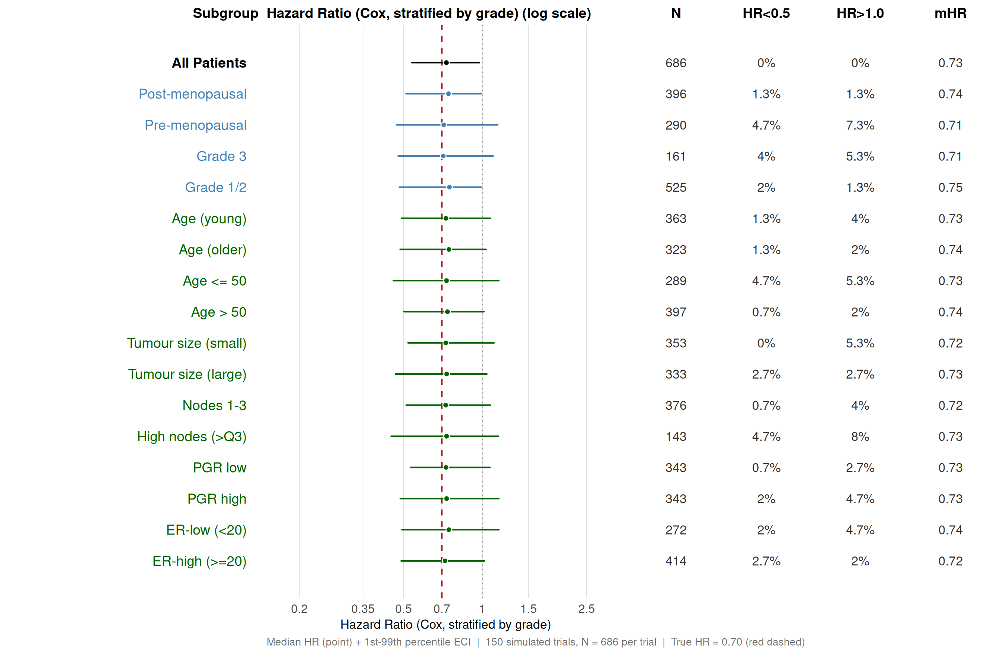
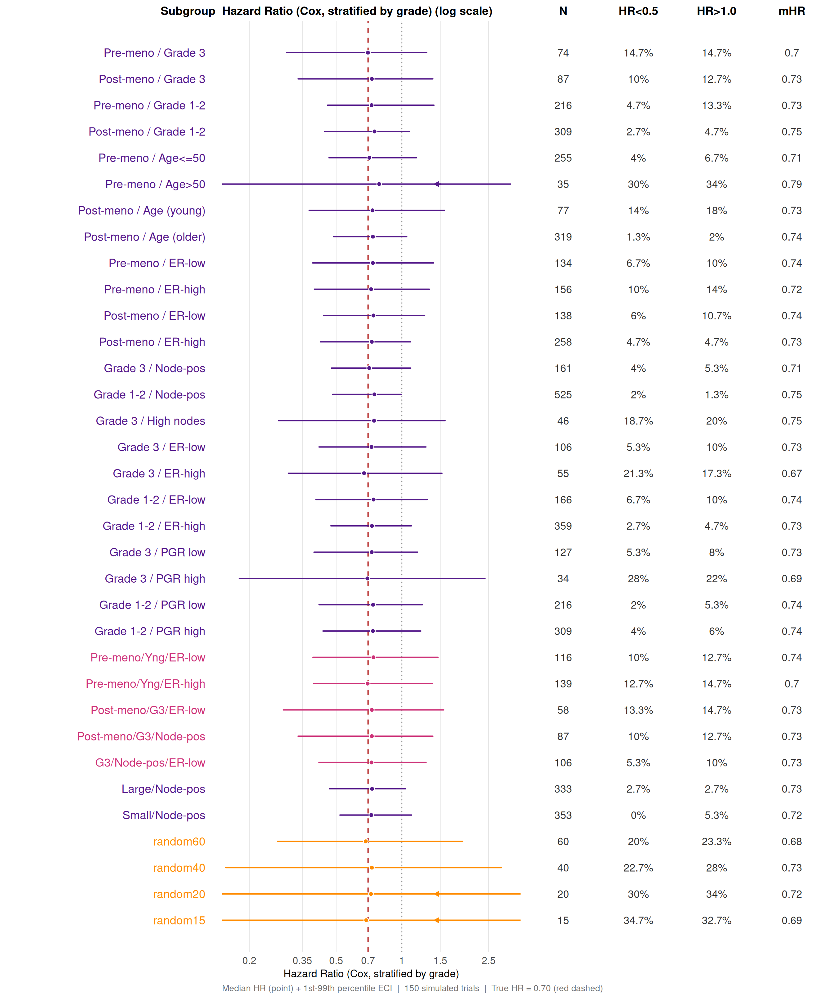
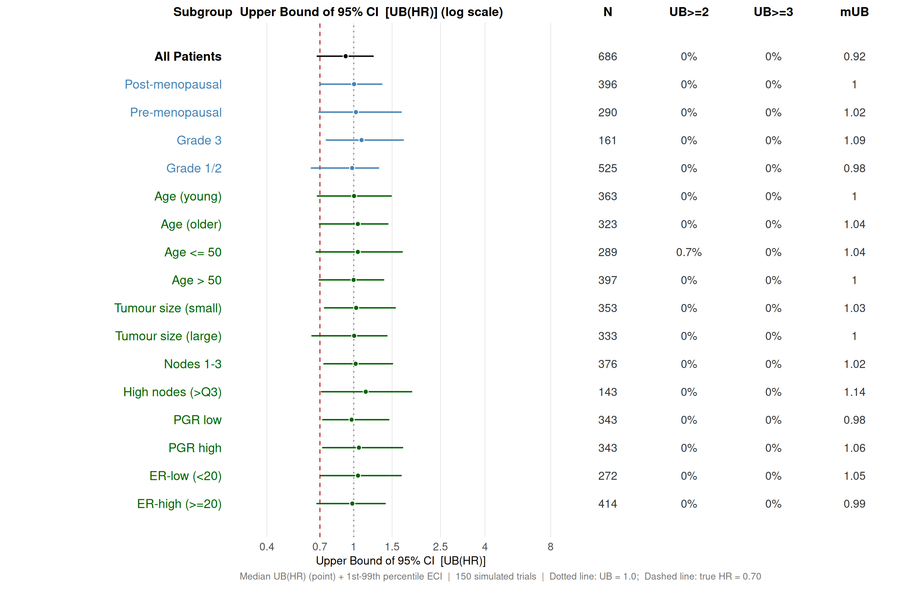
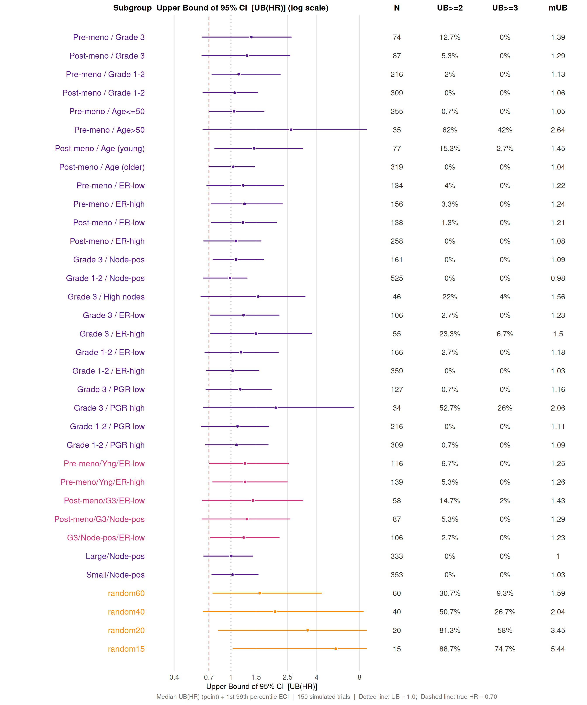
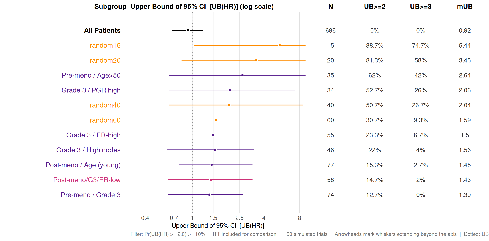
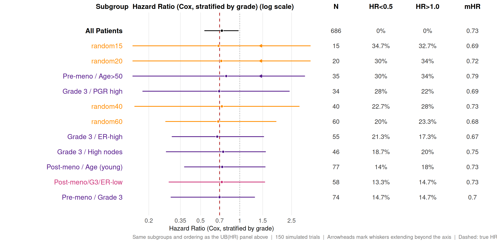
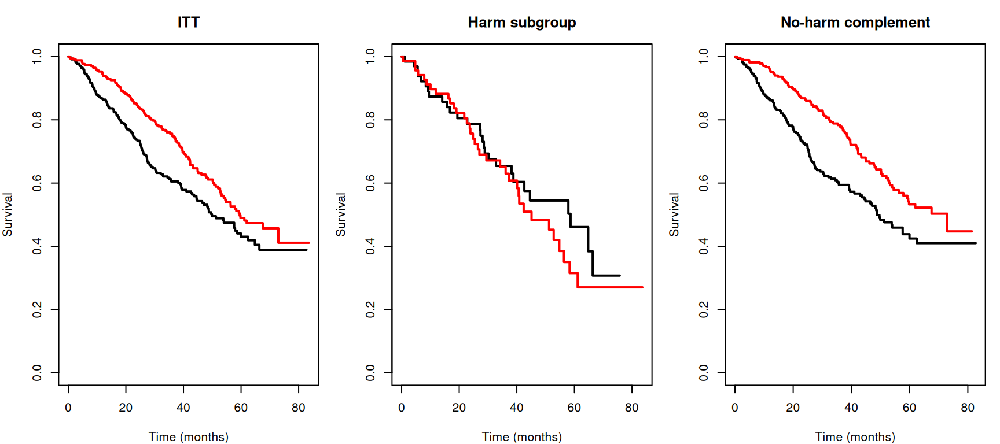

# n_sims_uniform: number of simulated trials. 150 keeps this article quick
# to build. For an actual application use 5,000-10,000, after timing a
# pilot run of about 100 trials on your own machine (see "Number of
# simulated trials" and the Timing summary).
# n_workers_user: parallel workers. NULL uses about 90% of the available
# cores; set an integer to override (1L runs without parallel workers).
n_sims_uniform <- 150L
n_workers_user <- NULL
# This article is written for the current CRAN release of forestsearch.
if (utils::packageVersion("forestsearch") < "0.4.0") {
stop("This article needs forestsearch >= 0.4.0. ",
"Update it with install.packages(\"forestsearch\").")
}Extreme Subgroup Effects Under a Uniform Treatment Benefit
A Fixed-Baseline (Conditional-on-X) Simulation Study Based on Observed Trial Data
2026-10-19
Source:vignettes/articles/extreme_subgroups.qmd
User settings. These are the only values you need to change to run this article yourself (see Running this article yourself below).
1 Overview
A central concern in exploratory subgroup analysis is the potential for extreme results driven entirely by chance, not by genuine treatment effect heterogeneity. When many subgroups are examined in a single dataset — as is routine in regulatory submissions and trial reports — small subgroups in particular can produce hazard ratio estimates that look dramatic simply because they are noisy. The smaller the subgroup, the wider the confidence interval, and the higher the probability that the upper bound strays far from the truth.
This vignette evaluates that risk directly. We generate synthetic trials from a data generating mechanism (DGM) with a perfectly uniform treatment benefit — the true hazard ratio is identical for every patient — and ask: how often do standard Cox model analyses produce extreme subgroup results?
Design note — fixed baseline (conditional-on-X). This article uses a fixed-baseline design. Every simulated trial here uses simulate_from_dgm(baseline = "fixed"): the covariate matrix is the observed GBSG trial data itself — every source patient exactly once — so subgroup definitions, memberships, and sizes are identical in every replicate. Only treatment assignment, entry times, latent event times, and censoring are re-drawn per trial. Between-trial variability therefore isolates the outcome-generation process, conditional on the enrolled patient panel: the question shifts from “what if this trial had enrolled a different sample from the same population?” to “given exactly these patients, how variable are the subgroup analyses across re-runs of the trial?” The random benchmark subgroups still re-draw their membership each replicate — but now over a fixed panel, with sizes exactly 60/40/20/15 by construction.
The vignette is organised as a complete, self-contained workflow:
Building the DGM — fitting a Weibull AFT model to real data, constructing a super-population, and calibrating the censoring process so that simulated trials reproduce the censoring pattern of the source data. This step establishes the uniform-effect scenario: a DGM where the true HR is 0.70 for every patient, with no subgroup differential effects.
Running simulated trials — drawing 150 synthetic trial replicates from the uniform DGM and fitting a stratified Cox model in each pre-defined subgroup.
Characterising the distribution of extreme results — for each subgroup, summarising how variable the Cox HR estimate is across simulations (the empirical 99% interval, or “ECI” — defined under Summary Statistics Across Simulations below) and how large the upper confidence bound UB(HR) can become by chance alone. Random benchmark subgroups (
random15,random20,random40,random60) with no clinical meaning serve as calibration anchors, making explicit that clinical subgroups of the same size can exhibit distributional patterns similar to (meaningless) random groupings.
All examples use the GBSG breast cancer dataset (survival::gbsg).
The forestsearch methodology is described in León et al. (2024); inference for trial estimands after data-driven subgroup discovery is developed in León and Anderson (2026). See the References section.
1.1 Example of Subgroups Under Study
The subgroups and their features (size, events, etc.) are specific to the study at hand. GBSG is used here as the case study, but the analyses can be applied or modified for any study. Part IV defines the GBSG subgroups examined: clinical factors (menopausal status, grade), single cuts of continuous variables (age, tumour size, nodes, PGR, ER), two- and three-way combinations, and four random benchmark subgroups.
The random* subgroups are the key benchmark. They are constructed by randomly sampling 15, 20, 40, and 60 patients. Such subgroups have no clinical meaning whatsoever — their true HR equals the ITT HR of 0.70. Any extreme result they produce is purely a function of their small size and sampling variability.
1.2 Summary Statistics Across Simulations
For each subgroup, each simulated trial produces two per-trial values: the Cox HR point estimate (stratified by grade) and the upper bound of the 95% confidence interval, UB(HR). Across the 150 simulated trials these per-trial values form an empirical distribution for each subgroup. All downstream summaries — the results table and every forest panel — operate on this empirical distribution.
1.2.1 99% empirical confidence interval (ECI)
The 99% ECI is the 1st–99th percentile range of the per-trial values accumulated across all simulated trials — computed separately for the Cox HR and for UB(HR). It is a description of how much these quantities vary from one synthetic trial to the next under the same DGM.
The 99% ECI is not a confidence interval in the inferential sense. A standard confidence interval is built from a single sample and is designed to cover the unknown true parameter with a stated probability. The ECI here is a different object: the true parameter is fixed and known by construction (true HR = 0.70 everywhere), and what is being summarised is the empirical spread of estimates across repeated trials drawn from the DGM. It answers “how variable is this estimator in repeated draws?”, not “what range of parameter values is consistent with the data?”. The terminology (“empirical confidence interval”) is chosen to evoke the visual similarity to a forest-plot CI line — point in the middle, whiskers spanning the range — not equivalence of meaning.
1.2.2 Six summary statistics (table + forest panels)
The results table and the forest-panel annotation columns report the same six summary statistics for each subgroup.
For the Cox HR point-estimate distribution:
-
Pr(HR<0.5)— fraction of simulated trials whose point estimate is below 0.5. Measures how often the HR alone looks like an extreme benefit by chance. -
Pr(HR>1.0)— fraction of simulated trials whose point estimate is above 1.0. Measures how often the estimate lands on the wrong side of no effect. -
mHR— unconditional median of the HR point estimate across all simulated trials. Under the uniform DGM (true HR = 0.70)mHRshould track 0.70 for every subgroup, confirming the Cox model is unbiased.
For the upper 95% confidence bound UB(HR):
-
Pr(UB>=2)— fraction of simulated trials whose upper bound is at or above 2.0. Measures how often a forest-plot row looks alarming to a safety reviewer at a moderately-strict threshold. -
Pr(UB>=3)— same, at a stricter threshold. -
mUB— unconditional median of the upper bound across all simulated trials.
The forest plots in the Results section visualise the median + 99% ECI graphically; the annotation columns and the results table give the same six summary statistics as numbers.
We note that continuous biomarkers can also be considered. This is more involved and not necessary for uniform effects, but valuable for trials with biomarkers when there is interest in exploring the dynamics of subgroups in the presence of actual biomarker effects (correlated with other patients’ characteristics).
1.3 Setting: Uniform Treatment Effect
The DGM is built from a real trial dataset using generate_aft_dgm_flex() with model = "null". The fitted Weibull AFT treatment coefficient is then rescaled via k_treat, with the multiplier calibrated by uniroot so that the average hazard ratio (AHR) matches a chosen target. Under model = "null" the AHR equals the patient-level individual HR, so calibrating the AHR fixes the true HR for every patient. The key feature of the resulting DGM is that the true log hazard ratio is constant across all patients:
In the examples below the target AHR is 0.70 (a moderate benefit). Every subgroup — regardless of how it is defined — shares this same underlying HR. There is no subgroup effect; any apparent finding is a false positive.
The calibration is performed in Part I via the helper function calibrate_k_treat(), the natural sibling of the package’s calibrate_k_inter() (which targets the harm-subgroup HR under model = "alt") and calibrate_cens_adjust() (which targets the censoring rate). See the Appendix: DGM with Heterogeneous Treatment Effects for a contrasting setup where one subgroup has a different treatment effect than the rest of the population.
1.4 Running this article yourself
This article is written for the current CRAN release of forestsearch (0.4.0) and runs as a single file.
-
Install the R packages. Installing forestsearch from CRAN also installs everything this article uses (survival, ggplot2, dplyr, patchwork, future, doFuture, foreach and weightedsurv). knitr and rmarkdown are needed to render the file:
install.packages(c("forestsearch", "knitr", "rmarkdown")) -
Download this file into your working directory:
download.file( "https://raw.githubusercontent.com/larry-leon/forestsearch/master/vignettes/articles/extreme_subgroups.qmd", "extreme_subgroups.qmd" ) Adjust the User settings at the top of the file if you wish:
n_sims_uniform(number of simulated trials) andn_workers_user(parallel workers).-
Run it, in either of two ways:
- In RStudio, open the file and click Render. RStudio includes Quarto, so nothing else is needed.
- Or run the chunks interactively (Run All). This needs no Quarto at all.
Outside RStudio, render from a terminal with
quarto render extreme_subgroups.qmd, which needs the Quarto command-line tool from https://quarto.org.
With the default 150 simulated trials, the whole article rendered in about 20 seconds on the 14-core machine used to build it. The Timing summary at the end reports the time on your machine and projects the cost of larger runs.
1.5 Documentation
Full documentation, including the function reference and all articles, is available on the pkgdown site: https://larry-leon.github.io/forestsearch/.
The Getting Started vignette is also installed with the package:
vignette("forestsearch")The other articles, including this one, are available on the pkgdown site only.
2 Setup
# Load GBSG data and convert time to months (DGM time scale)
data(gbsg, package = "survival")
gbsg$time_months <- gbsg$rfstime / 30.4375
gbsg$treat <- gbsg$hormon
# Kaplan–Meier median event time. The naive median over events only —
# median(time[event == 1]) — is biased downward in the presence of
# censoring, since the KM curve accounts for the at-risk set at each
# event time. If the KM curve does not cross 0.5 the median is
# returned as NA (event time "not reached").
km_overall <- survfit(Surv(time_months, status) ~ 1, data = gbsg)
km_median <- summary(km_overall)$table[["median"]]
cat("N =", nrow(gbsg), " Events:", sum(gbsg$status),
sprintf("(%.0f%%)", 100 * mean(gbsg$status)), "\n")N = 686 Events: 299 (44%) Median follow-up, (months): 35.6
cat("Median event time, KM (months) :",
if (is.na(km_median)) "not reached" else round(km_median, 1), "\n")Median event time, KM (months) : 59.4 2.1 Baseline characteristics
The table below summarises the cohort by treatment arm for the variables used later to define subgroups in Part IV: the continuous covariates (age, size, nodes, pgr, er), tumour grade, and menopausal status (meno). This is the source data — the super-population in the DGM is sampled from it, so any baseline imbalance carries through.
create_summary_table(
data = gbsg,
treat_var = "treat",
vars_continuous = c("age", "size", "nodes", "pgr", "er"),
vars_categorical = c("grade"),
vars_binary = c("meno"),
var_labels = list(
age = "Age (years)",
size = "Tumour size (mm)",
nodes = "Positive lymph nodes",
pgr = "Progesterone receptor (fmol)",
er = "Estrogen receptor (fmol)",
grade = "Tumour grade (1 / 2 / 3)",
meno = "Post-menopausal"
),
digits = 1,
show_pvalue = TRUE,
show_smd = TRUE,
show_missing = TRUE,
table_title = "GBSG baseline characteristics — variables used to define subgroups",
table_subtitle = paste0("Source: survival::gbsg | N = ", nrow(gbsg)),
compact_mode = TRUE
)| GBSG baseline characteristics — variables used to define subgroups | |||||
| Source: survival::gbsg | N = 686 | |||||
| Characteristic | Control (n=440) | Treatment (n=246) | P-value1 | SMD2 | |
|---|---|---|---|---|---|
| Age (years) | Mean (SD) | 51.1 (10.0) | 56.6 (9.4) | <0.001 | 0.57 |
| Tumour size (mm) | Mean (SD) | 29.6 (14.4) | 28.8 (14.1) | 0.470 | 0.06 |
| Positive lymph nodes | Mean (SD) | 4.9 (5.6) | 5.1 (5.3) | 0.665 | 0.03 |
| Progesterone receptor (fmol) | Mean (SD) | 102.0 (170.0) | 124.3 (249.7) | 0.213 | 0.11 |
| Estrogen receptor (fmol) | Mean (SD) | 79.7 (124.2) | 125.8 (191.1) | <0.001 | 0.30 |
| Tumour grade (1 / 2 / 3) | 0.273 | 0.06 | |||
| 1 | 48 (10.9%) | 33 (13.4%) | |||
| 2 | 281 (63.9%) | 163 (66.3%) | |||
| 3 | 111 (25.2%) | 50 (20.3%) | |||
| Post-menopausal | 209 (47.5%) | 187 (76.0%) | <0.001 | 0.61 | |
| 1 P-values: t-test for continuous, chi-square/Fisher's exact for categorical/binary variables | |||||
| 2 SMD = Standardized mean difference (Cohen's d for continuous, Cramer's V for categorical) | |||||
3 Part I — Building the Uniform-Effect Data Generating Mechanism
To evaluate extreme subgroup effects by chance, we need a DGM where the treatment has a genuine, uniform benefit — so that any subgroup finding is definitionally a false positive. This section constructs that DGM from the GBSG data using generate_aft_dgm_flex() with model = "null" (uniform treatment effect throughout; no embedded harm subgroup).
3.1 How generate_aft_dgm_flex() works
The function fits two parametric models to the source data — one for the event times, one for the censoring times — and uses them jointly to build a “super population” from which all later synthetic trials are drawn.
3.1.1 Outcome model — Weibull AFT
A Weibull accelerated failure time (AFT) model is fitted to the observed event times via survival::survreg():
(Standard minimum extreme-value distribution with density — generated in the package via log(rexp(n_super)). See the Treatment Effect Definitions and Biomarker Treatment Effects articles for the AFT–Cox parameterisation linkage.)
The linear predictor includes treatment, the user-specified continuous_vars and factor_vars, and — when model = "alt" — a treatment-by-subgroup interaction term. The treatment coefficient and the interaction coefficient can be rescaled before sampling via the k_treat and k_inter arguments, allowing the marginal treatment effect and HTE strength to be set independently of the fitted values. Under model = "null" the interaction is removed entirely, producing a uniform treatment effect across all patients.
3.1.2 Censoring model — AFT with AIC selection (default)
With select_censoring = TRUE (the default), the censoring distribution is fitted symmetrically by reversing the event indicator: censored observations become the “event” of interest in the reversed survival problem. The function fits four candidate AFT models to these reversed data and picks the best by AIC:
| Candidate | Distribution | Covariates |
|---|---|---|
Weibull |
Weibull |
treat + censoring covariates |
LogNormal |
Log-normal |
treat + censoring covariates |
Weibull0 |
Weibull | intercept only |
LogNormal0 |
Log-normal | intercept only |
The censoring covariates default to the outcome model’s covariates, which can be overridden via continuous_vars_cens / factor_vars_cens. The intercept-only candidates (*0) guard against overfitting when the censoring process is genuinely unrelated to baseline covariates — in that case AIC will favour them. The selected model’s parameters are stored in dgm$model_params$censoring (mu, tau, gamma, and type).
Alternative censoring-model modes (set select_censoring = FALSE):
-
Analytical: supply
cens_params$muandcens_params$taudirectly — no model is fitted. -
Force-fit: leave
cens_paramsempty — a single AFT model is fitted with the user-specified family (cens_type) and formula (cens_intercept_onlytoggles between intercept-only and covariate-adjusted).
3.1.3 Super-population construction
Once both models are in hand, the function draws n_super rows from the source data with replacement, attaches per-row linear predictors for both outcome and censoring under each treatment counterfactual, and returns the result as dgm$df_super. It also stores dgm$df_source — the prepared source data with every patient exactly once, carrying the same linear predictors — which is the frame this vignette simulates from via baseline = "fixed". Downstream, simulate_from_dgm() re-draws outcomes over that fixed panel without re-fitting anything — each call is a quantile-transform draw from the fitted distributions.
3.1.4 Marginal censoring rate is not yet calibrated
Even with the AIC-selected censoring model, the interaction between the fitted censoring distribution and the administrative cutoff analysis_time shifts the realised censoring rate in simulated trials away from the observed rate in the source data. Part II addresses this directly: check_censoring_dgm() diagnoses the discrepancy, and calibrate_cens_adjust() finds a log-scale shift (cens_adjust) that aligns the simulated censoring rate (or KM median censoring time) with the observed value.
3.2 Why time-scale consistency matters first
Before fitting anything, confirm that all time parameters are expressed in the same units. The single most common simulation failure is building the DGM on days (e.g. rfstime) and then passing analysis_time in months. The result is a follow-up window far shorter than the DGM event-time distribution, producing universal administrative censoring (event_sim = 0 for every subject).
After building the DGM, this quick check catches the problem:
# exp(mu) is the implied median event time on the DGM time scale.
# It should be close to the KM-based observed median event time.
# We use the KM estimator (computed in the data-prep chunk as km_median) rather
# than the naive median over events, which is biased by censoring.
cat("Observed median event time, KM (months):",
if (is.na(km_median)) "not reached" else round(km_median, 1), "\n")Observed median event time, KM (months): 59.4
cat("(After building dgm_uniform, exp(dgm_uniform$model_params$mu) should be similar.)\n")(After building dgm_uniform, exp(dgm_uniform$model_params$mu) should be similar.)
3.3 Fitting generate_aft_dgm_flex()
generate_aft_dgm_flex() fits a Weibull AFT model to the source data and generates a large super population from which all future trials will be drawn. For the extreme-subgroup evaluation we use model = "null", which sets the treatment effect to be identical for every patient — there is no subgroup, so any apparent finding is a false positive by construction.
The censoring model is estimated from the data by AIC-based selection across Weibull and log-normal models, with and without covariate adjustment. The next section shows how to verify and calibrate this so that simulated trials reproduce the censoring pattern of the source data.
Note. The DGM built here has a uniform treatment effect — no embedded subgroup. For a contrasting example with a true HTE (a harm subgroup defined by ER-low & pre-menopausal status), see the Appendix: DGM with Heterogeneous Treatment Effects at the end of this document.
3.3.1 Calibrating k_treat to a target AHR
generate_aft_dgm_flex() fits a Weibull AFT to the source data and uses the fitted treatment coefficient as the simulation truth. With k_treat = 1 (default), the resulting hazard ratio summaries are whatever the GBSG fit happens to produce — not exactly-specified targets.
To set the true treatment effect to exactly HR = 0.70, we rescale the fitted treatment coefficient via k_treat, with the multiplier chosen by uniroot so that a target summary of the DGM hits 0.70. The package function calibrate_k_treat() performs this calibration; it is the natural sibling of calibrate_k_inter() (which calibrates the harm-subgroup HR under model = "alt") and calibrate_cens_adjust() (which calibrates the censoring rate). All three follow the same uniroot-based pattern.
Which target? calibrate_k_treat() can target either of two HR summaries computed on the super-population of potential outcomes:
-
dgm$hazard_ratios$overall— the marginal Cox HR from a no-covariate Cox fit on stacked potential outcomes (default,use_ahr = FALSE) -
dgm$hazard_ratios$AHR— the average hazard ratio, across the super-population (use_ahr = TRUE)
Under model = "null" (uniform effect) the AHR equals the patient-level individual HR — the same number for every subject. The marginal Cox HR is attenuated toward 1 relative to the AHR because the Cox model is non-collapsible: a no-covariate fit on heterogeneous covariate distributions does not recover the patient-level HR.
The simulation analyses below fit Cox models stratified by grade, which is closer to a covariate-adjusted fit than to a marginal fit. Under proportional hazards (which the Weibull AFT satisfies), a sufficiently-adjusted Cox model estimates the patient-level HR — i.e., the AHR — not the attenuated marginal HR. We therefore calibrate against the AHR (use_ahr = TRUE) so that the median across simulations of the stratified Cox HR estimate tracks 0.70 closely. Calibrating against hazard_ratios$overall instead would force the marginal Cox HR to 0.70 and pull the simulation median below 0.70 by the same non-collapsibility shift.
See ?calibrate_k_treat for full documentation.
3.3.2 Build the DGM (calibrated k_treat)
The full argument list to generate_aft_dgm_flex() is laid out as a single named list base_args_uniform. This list is then used twice — once inside calibrate_k_treat() to find the right k_treat, and once to build the final calibrated DGM — so every knob of the constructor appears exactly once.
.t_dgm_start <- Sys.time()
# ── All arguments to generate_aft_dgm_flex() except k_treat ───────────────
# k_treat is the calibration parameter; everything else is fixed up front.
base_args_uniform <- list(
# ── Required: source data & outcome ─────────────────────────────────────
data = gbsg,
continuous_vars = c("age", "size", "nodes", "pgr", "er"),
factor_vars = c("meno", "grade"),
outcome_var = "time_months",
event_var = "status",
# ── Treatment ───────────────────────────────────────────────────────────
treatment_var = "hormon",
draw_treatment = FALSE, # default
# ── HTE specification — uniform treatment effect, no embedded subgroup ──
model = "null", # uniform HR throughout
subgroup_vars = NULL, # default — no embedded HTE
subgroup_cuts = NULL, # default
k_inter = 1, # default (irrelevant under "null")
spline_spec = NULL, # default
set_beta_spec = list(set_var = NULL, beta_var = NULL), # default
# ── Censoring model (independent of treatment effect) ───────────────────
continuous_vars_cens = NULL, # default → inherit
factor_vars_cens = NULL, # default → inherit
select_censoring = TRUE, # default — AIC select
cens_type = "weibull", # default
cens_params = list(), # default
cens_intercept_only = FALSE, # default
# ── Super population & misc ─────────────────────────────────────────────
n_super = 5000,
standardize = FALSE, # default
seed = 99,
verbose = FALSE
)
# ── Step 1: calibrate k_treat so that the AHR is exactly 0.70 ─────────────
# We calibrate to the AHR (average hazard ratio over the super-population),
# not the marginal Cox HR, because the simulation analyses below fit a Cox
# model stratified by `grade` — and under Cox non-collapsibility the
# marginal Cox HR on fully-observed potential outcomes is attenuated toward
# 1 relative to both the AHR and the stratified Cox HR. Calibrating to the
# AHR makes the simulation median HR track 0.70 closely; calibrating to the
# marginal Cox HR (`use_ahr = FALSE`, the default) would pull the simulation
# median below 0.70. See `?calibrate_k_treat` for both options.
k_treat_uniform <- calibrate_k_treat(
target_hr_overall = 0.70,
base_args = base_args_uniform,
k_treat_range = c(-5, 5),
tol = 1e-6,
use_ahr = TRUE,
verbose = TRUE
)
# ── Step 2: build the DGM with the calibrated k_treat ─────────────────────
dgm_uniform <- do.call(
generate_aft_dgm_flex,
c(base_args_uniform, list(k_treat = k_treat_uniform))
)
t_dgm <- as.numeric(difftime(Sys.time(), .t_dgm_start, units = "secs"))
cat("Uniform DGM (AHR-calibrated)\n",
" k_treat calibrated to : ", round(k_treat_uniform, 4), "\n",
" AHR (target 0.70) : ",
round(dgm_uniform$hazard_ratios$AHR, 4), "\n",
" marginal Cox HR (attenuated): ",
round(dgm_uniform$hazard_ratios$overall, 4), "\n",
" implied median event T : ",
round(exp(dgm_uniform$model_params$mu), 1), " months\n", sep = "")Uniform DGM (AHR-calibrated)
k_treat calibrated to : 0.956
AHR (target 0.70) : 0.7
marginal Cox HR (attenuated): 0.7665
implied median event T : 55.5 months
# ── Hard stop: fixed-baseline mode requires dgm$df_source ─────────────────
# The whole vignette simulates via baseline = "fixed", which reads the
# source frame stored by the constructor (forestsearch versions that
# store df_source). Fail here, at build time, rather than 1,000 lines
# later inside the parallel loop.
if (is.null(dgm_uniform$df_source)) {
stop("dgm_uniform$df_source is missing: this forestsearch version does ",
"not store the fixed-baseline frame. Update the package ",
"(baseline = \"fixed\" support) and rebuild the DGM.")
}
cat("Fixed-baseline panel : nrow(df_source) =",
nrow(dgm_uniform$df_source), "patients (the GBSG trial data)\n")Fixed-baseline panel : nrow(df_source) = 686 patients (the GBSG trial data)
# Key DGM outputs.
#
# Terminology note: dgm$hazard_ratios$overall is the *marginal* Cox HR
# from a no-covariate fit on stacked potential outcomes — not the
# "true HR" in the patient-level sense. Under Cox non-collapsibility
# it is attenuated toward 1 relative to the AHR (which equals the
# patient-level individual HR under model = "null"). See "Calibrating
# k_treat to a target AHR" and the Treatment Effect Definitions article.
cat("=== Uniform DGM Summary ===\n")=== Uniform DGM Summary ===
cat("Time scale : months\n")Time scale : monthsImplied median T : exp(mu) = 55.5 monthsMarginal HR : 0.766 Causal AHR : 0.7
cat("Censoring type :",
dgm_uniform$model_params$censoring$type, "\n")Censoring type : weibull 4 Part II — Censoring Diagnostics and Calibration
For the simulation results to be credible, the censoring pattern in each synthetic trial must match what was observed in the source data. If the simulated censoring rate is much higher or lower than the real one, the event counts in small subgroups will be systematically wrong, biasing the HR and UB(HR) distributions we are trying to characterise.
Even with a well-fitted censoring model, the interaction between the DGM censoring distribution and administrative censoring (the analysis_time cutoff) can shift the effective censoring rate substantially away from what was observed. This section covers two functions that diagnose and correct for this shift before the main simulation loop is run.
4.1 Simulation pipeline configuration
The simulation pipeline has a small number of parameters that govern every per-trial draw: the baseline mode, the administrative analysis time, the recruitment window, and the iteration-seed scheme. Defining them once, in a single sim_config list, means the calibration step (below), the single-trial demonstration in Part III, and the main parallel loop in Part IV all use exactly the same values — no duplication, no risk of drift. Change a field here and every downstream chunk reacts automatically. Under baseline = "fixed" the per-trial N is not a free parameter — it is nrow(dgm_uniform$df_source) by construction.
# ── Simulation pipeline configuration ──────────────────────────────────────
# Single source of truth for every per-trial parameter. Every downstream
# call to simulate_from_dgm() and calibrate_cens_adjust() references this
# list — nothing is hard-coded twice.
#
# baseline = "fixed": every simulated trial uses dgm$df_source (each GBSG
# patient exactly once), so per-trial N is nrow(df_source) rather than a
# free n_per_trial parameter — n is deliberately absent from this list.
sim_config <- list(
baseline = "fixed", # conditional-on-X: covariates fixed at trial data
analysis_time = 84, # months — administrative censoring time
max_entry = 24, # months — uniform recruitment window
seed_base = 0L, # per-trial seed = seed_base + iter
rand_seed_offset = 1e6L # random-subgroup seed = seed + offset
)
cat("Per-trial simulation parameters\n",
" baseline : ", sim_config$baseline,
" (N per trial = ", nrow(dgm_uniform$df_source),
", fixed by construction)\n",
" analysis_time :", sim_config$analysis_time, "months\n",
" max_entry :", sim_config$max_entry, "months\n",
" seed scheme : iter seed = ", sim_config$seed_base,
" + ss\n", sep = "")Per-trial simulation parameters
baseline : fixed (N per trial = 686, fixed by construction)
analysis_time :84months
max_entry :24months
seed scheme : iter seed = 0 + ss4.2 Diagnosing censoring consistency
check_censoring_dgm() compares three censoring summaries between the DGM reference data (dgm$df_super) and a simulated dataset: overall censoring rate, censoring-time quantiles among censored subjects, and the KM-based median censoring time (estimated by reversing the event indicator so that censored observations become the “event” of interest).
# Generate a pilot simulated trial (no calibration yet).
# baseline = "fixed" => the panel is dgm$df_source; n is implied (not passed).
sim_pilot <- simulate_from_dgm(
dgm = dgm_uniform,
baseline = sim_config$baseline,
rand_ratio = 1, # default (1:1 randomisation)
entry_var = NULL, # default (synthetic entry times)
max_entry = sim_config$max_entry,
analysis_time = sim_config$analysis_time,
cens_adjust = 0, # pilot: no calibration shift
draw_treatment = TRUE, # default
seed = 1,
strata_rand = NULL, # default
hrz_crit = NULL, # default
keep_rand = FALSE, # default
time_eos = NULL # default
)
cat("Pilot trial: N =", nrow(sim_pilot),
" Event rate:", round(mean(sim_pilot$event_sim), 3), "\n")Pilot trial: N = 686 Event rate: 0.408
diag0 <- check_censoring_dgm(
sim_data = sim_pilot,
dgm = dgm_uniform,
treat_var = "treat_sim", # default
rate_tol = 0.10,
median_tol = 0.25,
verbose = TRUE
)
=========================================================
Censoring Diagnostic: DGM Reference vs Simulated
=========================================================
DGM censoring type : weibull
DGM mu_cens : 4.0312 [exp = 56.33 time units]
DGM tau_cens : 0.4246
Reference n (super) : 5000
Simulated n : 686
--- 1. Censoring Rates ---
Group Ref_rate Sim_rate Diff
Overall 57.6% 59.2% +1.6 pp
Arm 0 54.7% 55.4% +0.7 pp
Arm 1 63.1% 63.0% -0.1 pp
--- 2. Censoring-Time Quantiles (censored subjects only) ---
Ref: y[event == 0] | Sim: c_time[event_sim == 0]
Quantile Ref Sim Ratio
25% 29.31 27.54 0.940
50% 47.34 43.74 0.924
75% 61.04 56.91 0.932
90% 70.83 65.97 0.931
--- 3. KM Median Censoring Time (reversed event indicator) ---
Group Ref_median Sim_median Ratio
Overall 54.04517 48.73826 0.902
Arm 0 51.58111 47.88574 0.928
Arm 1 56.80493 49.38739 0.869
--- 4. Implied Time-Scale Check ---
exp(params$mu) = 55.53 [median outcome time, DGM scale]
exp(params$censoring$mu)= 56.33 [median censoring time, DGM scale]
If these values are implausibly large relative to your
analysis_time, the DGM was likely built on a different time
scale (e.g. days vs months).
[OK] No substantial discrepancies detected.
=========================================================Reading the output. Flags warn when the absolute censoring-rate discrepancy exceeds rate_tol (default 10 percentage points) or when the KM median censoring times differ by more than median_tol (default 25%). Common causes:
-
Time-scale mismatch — check
exp(dgm$model_params$mu)againstanalysis_time. -
Short
analysis_time— administrative censoring dominates the censoring process, inflating the censoring rate and compressing censoring times. -
Large
cens_adjust— the log-scale shift has moved the DGM censoring distribution far from the original data.
4.3 Calibrating cens_adjust
calibrate_cens_adjust() uses uniroot to find the value of cens_adjust — a log-scale shift applied to the DGM censoring model — that equates a chosen summary statistic between the reference and simulated data. Two targets are available: "rate" (overall censoring rate) and "km_median" (KM-based median censoring time).
How the objective function works. At each candidate cens_adjust:
-
simulate_from_dgm()generatesn_evalsynthetic subjects. -
check_censoring_dgm()extracts the target metric. - The objective returns
sim_metric - ref_metric.
uniroot finds the zero crossing. The fixed seed inside the objective ensures the same candidate is always evaluated identically, preventing the root-finder from chasing Monte Carlo noise.
.t_cal_start <- Sys.time()
# Calibrate under the same fixed-baseline design as the main loop.
# calibrate_cens_adjust() forwards `...` to simulate_from_dgm(), so
# baseline = "fixed" applies inside the objective — but that mode requires
# n == nrow(df_source), hence n and n_eval are pinned to the panel size
# (they are NOT free Monte Carlo sizes here, as they would be under random X).
n_panel <- nrow(dgm_uniform$df_source)
cal_uniform <- calibrate_cens_adjust(
dgm = dgm_uniform,
target = "rate", # "rate" | "km_median"
n = n_panel, # pinned: fixed panel size
rand_ratio = 1, # default
analysis_time = sim_config$analysis_time,
max_entry = sim_config$max_entry,
seed = 42,
interval = c(-3, 3), # default — uniroot search interval
tol = 1e-4, # default — uniroot tolerance
n_eval = n_panel, # pinned: must equal n under "fixed"
verbose = TRUE,
baseline = sim_config$baseline # forwarded to simulate_from_dgm()
)
-------------------------------------------------------
calibrate_cens_adjust()
-------------------------------------------------------
Target metric : rate
Reference value : 0.5756
Search interval : [-3.00, 3.00]
n_eval per call : 686
Tolerance : 1.0e-04
-------------------------------------------------------
Searching...
=========================================================
Censoring Diagnostic: DGM Reference vs Simulated
=========================================================
DGM censoring type : weibull
DGM mu_cens : 4.0312 [exp = 56.33 time units]
DGM tau_cens : 0.4246
Reference n (super) : 5000
Simulated n : 686
--- 1. Censoring Rates ---
Group Ref_rate Sim_rate Diff
Overall 57.6% 57.6% +0.0 pp
Arm 0 54.7% 53.6% -1.0 pp
Arm 1 63.1% 61.5% -1.6 pp
--- 2. Censoring-Time Quantiles (censored subjects only) ---
Ref: y[event == 0] | Sim: c_time[event_sim == 0]
Quantile Ref Sim Ratio
25% 29.31 29.76 1.016
50% 47.34 43.20 0.913
75% 61.04 58.63 0.960
90% 70.83 69.18 0.977
--- 3. KM Median Censoring Time (reversed event indicator) ---
Group Ref_median Sim_median Ratio
Overall 54.04517 49.05797 0.908
Arm 0 51.58111 48.59011 0.942
Arm 1 56.80493 49.74511 0.876
--- 4. Implied Time-Scale Check ---
exp(params$mu) = 55.53 [median outcome time, DGM scale]
exp(params$censoring$mu)= 56.33 [median censoring time, DGM scale]
If these values are implausibly large relative to your
analysis_time, the DGM was likely built on a different time
scale (e.g. days vs months).
[OK] No substantial discrepancies detected.
=========================================================
=== Calibration Result ===
cens_adjust : 0.041249
Reference rate : 0.5756
Simulated rate : 0.5758
Residual : 0.0002
uniroot iters : 18
-------------------------------------------------------
t_cal <- as.numeric(difftime(Sys.time(), .t_cal_start, units = "secs"))
Calibrated cens_adjust : 0.0412 Reference censoring rate: 0.576 Achieved censoring rate: 0.576 Residual : 2e-04 Monotonicity note. The objective is monotone in cens_adjust for both targets: larger values increase censoring times (lower rate, higher KM median), smaller values do the opposite. If uniroot fails, the target lies outside the interval; widen it and retry.
4.4 Verifying the calibrated simulation
sim_cal <- simulate_from_dgm(
dgm = dgm_uniform,
baseline = sim_config$baseline, # fixed panel; n implied
rand_ratio = 1, # default
entry_var = NULL, # default
max_entry = sim_config$max_entry,
analysis_time = sim_config$analysis_time,
cens_adjust = cal_uniform$cens_adjust,
draw_treatment = TRUE, # default
seed = 123,
strata_rand = NULL, # default
hrz_crit = NULL, # default
keep_rand = FALSE, # default
time_eos = NULL # default
)
diag_cal <- check_censoring_dgm(
sim_data = sim_cal,
dgm = dgm_uniform,
treat_var = "treat_sim", # default
rate_tol = 0.05,
median_tol = 0.15,
verbose = TRUE
)
=========================================================
Censoring Diagnostic: DGM Reference vs Simulated
=========================================================
DGM censoring type : weibull
DGM mu_cens : 4.0312 [exp = 56.33 time units]
DGM tau_cens : 0.4246
Reference n (super) : 5000
Simulated n : 686
--- 1. Censoring Rates ---
Group Ref_rate Sim_rate Diff
Overall 57.6% 57.9% +0.3 pp
Arm 0 54.7% 53.1% -1.6 pp
Arm 1 63.1% 62.7% -0.4 pp
--- 2. Censoring-Time Quantiles (censored subjects only) ---
Ref: y[event == 0] | Sim: c_time[event_sim == 0]
Quantile Ref Sim Ratio
25% 29.31 27.65 0.944
50% 47.34 42.33 0.894
75% 61.04 59.32 0.972
90% 70.83 67.83 0.958
--- 3. KM Median Censoring Time (reversed event indicator) ---
Group Ref_median Sim_median Ratio
Overall 54.04517 49.58505 0.917
Arm 0 51.58111 49.10409 0.952
Arm 1 56.80493 50.19606 0.884
--- 4. Implied Time-Scale Check ---
exp(params$mu) = 55.53 [median outcome time, DGM scale]
exp(params$censoring$mu)= 56.33 [median censoring time, DGM scale]
If these values are implausibly large relative to your
analysis_time, the DGM was likely built on a different time
scale (e.g. days vs months).
[OK] No substantial discrepancies detected.
=========================================================5 Part III — Generating Synthetic Trials
With the uniform DGM built, diagnosed, and calibrated, each simulated trial is a single call to simulate_from_dgm(). Under baseline = "fixed" the function takes the source panel as-is — every GBSG patient exactly once, in source order — then assigns treatment, generates latent survival times from the AFT model, applies the calibrated censoring model, and truncates at analysis_time. No row sampling occurs: the covariates, and therefore every covariate-defined subgroup, are identical in every trial.
The single-trial example below illustrates the output structure. In the uniform DGM every patient has the same true HR of 0.70, so flag_harm is always 0 — there is no embedded subgroup. The 150 replications that drive the extreme-subgroup analysis in Part IV follow the same pattern, looping over subgroups inside each replicate.
sim_data <- simulate_from_dgm(
dgm = dgm_uniform,
baseline = sim_config$baseline, # fixed panel; N = nrow(df_source)
rand_ratio = 1,
entry_var = NULL, # default
max_entry = sim_config$max_entry,
analysis_time = sim_config$analysis_time,
cens_adjust = cal_uniform$cens_adjust,
draw_treatment = TRUE, # default
seed = 100,
strata_rand = NULL, # default
hrz_crit = NULL, # default
keep_rand = FALSE, # default
time_eos = NULL # default
)
cat("Simulated trial: N =", nrow(sim_data), "\n")Simulated trial: N = 686
cat("Treatment allocation:",
table(sim_data$treat_sim)[["0"]], "control /",
table(sim_data$treat_sim)[["1"]], "experimental\n")Treatment allocation: 343 control / 343 experimentalOverall event rate : 0.408
cat("flag_harm range :", paste(range(sim_data$flag_harm), collapse = "–"),
" (always 0 under the uniform DGM)\n")flag_harm range : 0–0 (always 0 under the uniform DGM)Cox specification — marginal here, stratified in Part IV. The single-trial sanity check below fits an unstratified Cox model (treat_sim only). This deliberately matches the no-covariate fit behind dgm_uniform$hazard_ratios$overall (the marginal HR reported above), so that the observed and DGM-implied HRs are directly comparable. The full simulation loop in Part IV uses a stratified Cox model (treat_sim + strata(grade)), which under Cox non-collapsibility recovers a quantity closer to the AHR / patient-level true HR — i.e., 0.70 — and which reflects how the user’s analysis plan specifies the primary subgroup analysis.
# Fit overall Cox model on this single simulated trial
cox_all <- coxph(Surv(y_sim, event_sim) ~ treat_sim, data = sim_data)
hr_obs <- exp(coef(cox_all))
ci_obs <- exp(confint(cox_all))
cat("Single-trial Cox analysis (one realisation):\n")Single-trial Cox analysis (one realisation): Marginal HR (DGM) : 0.766 Observed HR : 0.663 95% CI : (0.524, 0.84)6 Part IV — Main Results: Extreme Subgroup Effects Under a Uniform Treatment Benefit
6.1 The Core Question
Parts I–III established how to build a uniform DGM and generate synthetic trials from it. We now use those tools of forestsearch to answer the question this vignette is built around: when many subgroups are examined in a trial with a perfectly uniform treatment benefit, how extreme can a standard Cox subgroup analysis look by chance alone?
We generate 150 synthetic trials from dgm_uniform and fit a Cox model (stratified by grade) in each pre-defined subgroup of every trial. For each subgroup we accumulate the per-trial HR estimate and the upper 95% confidence bound. The resulting empirical distributions are summarised using the six statistics defined under Summary Statistics Across Simulations in the Overview — Pr(HR<0.5), Pr(HR>1.0), mHR, Pr(UB>=2), Pr(UB>=3), mUB — and visualised as median + 99% ECI ranges in the forest panels. As discussed there, the 99% ECI describes empirical spread across simulated trials; it is not a confidence interval in the inferential sense.
The random* subgroups (no clinical basis, same true HR as everyone else) serve as calibration anchors: any clinical subgroup of the same N has an identical chance distribution, so clinical rationale provides no statistical protection against the extreme results that small samples naturally produce.
6.2 Setting: Uniform Treatment Effect (recap)
The DGM built in Part I (dgm_uniform) sets the true log hazard ratio constant across all patients:
With true HR = 0.70, every subgroup — regardless of how it is defined — shares this same underlying HR. Any apparent subgroup finding in the analysis below is, by construction, a false positive.
6.3 Subgroups Under Study
Each simulated trial analyses the same set of pre-defined subgroups, ranging from clinically motivated subpopulations to deliberately artificial ones.
The random* subgroups are the key benchmark. They are constructed by randomly sampling approximately 20% of subjects and taking the first 15, 20, 40, and 60 patients from that draw:
set.seed(8316951)
gbsg$flag_itt <- 1L
# ── Scalar cut-points for continuous variables ────────────────────────────
# Computed once from the observed data; re-exposed as columns inside each
# simulated df_s so that subset expressions like "age <= age_med" resolve.
age_med <- median(gbsg$age) # ~53 yrs
size_med <- median(gbsg$size) # ~25 mm
nodes_q3 <- quantile(gbsg$nodes, 0.75) # top-quartile node count (~5)
pgr_med <- median(gbsg$pgr) # median PGR
er_cut <- 20 # ER-low clinical threshold (fmol / mg)
subgroups <- list(
# ── A. Full trial (ITT) ─────────────────────────────────────────────────
list(id = "flag_itt == 1", name = "All Patients", grp = "ITT"),
# ── B. Single clinical / factor subgroups ───────────────────────────────
list(id = "meno == 1", name = "Post-menopausal", grp = "Clinical"),
list(id = "meno == 0", name = "Pre-menopausal", grp = "Clinical"),
list(id = "grade == 3", name = "Grade 3", grp = "Clinical"),
list(id = "grade != 3", name = "Grade 1/2", grp = "Clinical"),
# ── C. Single continuous-variable cuts ──────────────────────────────────
list(id = "age <= age_med", name = "Age (young)", grp = "Continuous"),
list(id = "age > age_med", name = "Age (older)", grp = "Continuous"),
list(id = "age <= 50", name = "Age <= 50", grp = "Continuous"),
list(id = "age > 50", name = "Age > 50", grp = "Continuous"),
list(id = "size <= size_med", name = "Tumour size (small)", grp = "Continuous"),
list(id = "size > size_med", name = "Tumour size (large)", grp = "Continuous"),
list(id = "nodes == 0", name = "Node-negative", grp = "Continuous"),
list(id = "nodes > 0 & nodes <= 3", name = "Nodes 1-3", grp = "Continuous"),
list(id = "nodes > nodes_q3", name = "High nodes (>Q3)", grp = "Continuous"),
list(id = "pgr <= pgr_med", name = "PGR low", grp = "Continuous"),
list(id = "pgr > pgr_med", name = "PGR high", grp = "Continuous"),
list(id = "er <= er_cut", name = "ER-low (<20)", grp = "Continuous"),
list(id = "er > er_cut", name = "ER-high (>=20)", grp = "Continuous"),
# ── D. Menopausal status x Grade (2x2) ──────────────────────────────────
list(id = "meno == 0 & grade == 3", name = "Pre-meno / Grade 3", grp = "Interaction: meno x grade"),
list(id = "meno == 1 & grade == 3", name = "Post-meno / Grade 3", grp = "Interaction: meno x grade"),
list(id = "meno == 0 & grade != 3", name = "Pre-meno / Grade 1-2", grp = "Interaction: meno x grade"),
list(id = "meno == 1 & grade != 3", name = "Post-meno / Grade 1-2", grp = "Interaction: meno x grade"),
# ── E. Menopausal status x Age ───────────────────────────────────────────
list(id = "meno == 0 & age <= 50", name = "Pre-meno / Age<=50", grp = "Interaction: meno x age"),
list(id = "meno == 0 & age > 50", name = "Pre-meno / Age>50", grp = "Interaction: meno x age"),
list(id = "meno == 1 & age <= age_med", name = "Post-meno / Age (young)", grp = "Interaction: meno x age"),
list(id = "meno == 1 & age > age_med", name = "Post-meno / Age (older)", grp = "Interaction: meno x age"),
# ── F. Menopausal status x ER status ────────────────────────────────────
list(id = "meno == 0 & er <= er_cut", name = "Pre-meno / ER-low", grp = "Interaction: meno x ER"),
list(id = "meno == 0 & er > er_cut", name = "Pre-meno / ER-high", grp = "Interaction: meno x ER"),
list(id = "meno == 1 & er <= er_cut", name = "Post-meno / ER-low", grp = "Interaction: meno x ER"),
list(id = "meno == 1 & er > er_cut", name = "Post-meno / ER-high", grp = "Interaction: meno x ER"),
# ── G. Grade x Node status ───────────────────────────────────────────────
list(id = "grade == 3 & nodes == 0", name = "Grade 3 / Node-neg", grp = "Interaction: grade x nodes"),
list(id = "grade == 3 & nodes > 0", name = "Grade 3 / Node-pos", grp = "Interaction: grade x nodes"),
list(id = "grade != 3 & nodes == 0", name = "Grade 1-2 / Node-neg", grp = "Interaction: grade x nodes"),
list(id = "grade != 3 & nodes > 0", name = "Grade 1-2 / Node-pos", grp = "Interaction: grade x nodes"),
list(id = "grade == 3 & nodes > nodes_q3", name = "Grade 3 / High nodes", grp = "Interaction: grade x nodes"),
# ── H. Grade x ER status ─────────────────────────────────────────────────
list(id = "grade == 3 & er <= er_cut", name = "Grade 3 / ER-low", grp = "Interaction: grade x ER"),
list(id = "grade == 3 & er > er_cut", name = "Grade 3 / ER-high", grp = "Interaction: grade x ER"),
list(id = "grade != 3 & er <= er_cut", name = "Grade 1-2 / ER-low", grp = "Interaction: grade x ER"),
list(id = "grade != 3 & er > er_cut", name = "Grade 1-2 / ER-high", grp = "Interaction: grade x ER"),
# ── I. Grade x PGR ──────────────────────────────────────────────────────
list(id = "grade == 3 & pgr <= pgr_med", name = "Grade 3 / PGR low", grp = "Interaction: grade x PGR"),
list(id = "grade == 3 & pgr > pgr_med", name = "Grade 3 / PGR high", grp = "Interaction: grade x PGR"),
list(id = "grade != 3 & pgr <= pgr_med", name = "Grade 1-2 / PGR low", grp = "Interaction: grade x PGR"),
list(id = "grade != 3 & pgr > pgr_med", name = "Grade 1-2 / PGR high", grp = "Interaction: grade x PGR"),
# ── J. Age x ER x Menopausal (3-way) ───────────────────────────────────
list(id = "meno == 0 & age <= 50 & er <= er_cut", name = "Pre-meno/Yng/ER-low", grp = "3-way"),
list(id = "meno == 0 & age <= 50 & er > er_cut", name = "Pre-meno/Yng/ER-high", grp = "3-way"),
list(id = "meno == 1 & grade == 3 & er <= er_cut", name = "Post-meno/G3/ER-low", grp = "3-way"),
list(id = "meno == 1 & grade == 3 & nodes > 0", name = "Post-meno/G3/Node-pos", grp = "3-way"),
list(id = "grade == 3 & nodes > 0 & er <= er_cut", name = "G3/Node-pos/ER-low", grp = "3-way"),
# ── K. Size x Node combinations ─────────────────────────────────────────
list(id = "size > size_med & nodes > 0", name = "Large/Node-pos", grp = "Interaction: size x nodes"),
list(id = "size > size_med & nodes == 0", name = "Large/Node-neg", grp = "Interaction: size x nodes"),
list(id = "size <= size_med & nodes > 0", name = "Small/Node-pos", grp = "Interaction: size x nodes"),
list(id = "size <= size_med & nodes == 0", name = "Small/Node-neg", grp = "Interaction: size x nodes"),
# ── L. Random benchmark subgroups ───────────────────────────────────────
# No clinical meaning; regenerated each simulation. Calibrate variability
# by size against the clinical and interaction subgroups above.
list(id = "random60 == 1", name = "random60", grp = "Random (N~60)"),
list(id = "random40 == 1", name = "random40", grp = "Random (N~40)"),
list(id = "random20 == 1", name = "random20", grp = "Random (N~20)"),
list(id = "random15 == 1", name = "random15", grp = "Random (N~15)")
)
# ── Show observed sizes from GBSG ────────────────────────────────────────
# Scalar cut-points exposed as columns so eval() resolves them correctly.
gbsg_eval <- gbsg
gbsg_eval$age_med <- age_med
gbsg_eval$size_med <- size_med
gbsg_eval$nodes_q3 <- nodes_q3
gbsg_eval$pgr_med <- pgr_med
gbsg_eval$er_cut <- er_cut
gbsg_eval$random60 <- 0L
gbsg_eval$random40 <- 0L
gbsg_eval$random20 <- 0L
gbsg_eval$random15 <- 0L
sg_sizes <- sapply(subgroups, function(s) {
tryCatch(
sum(eval(parse(text = s$id), envir = gbsg_eval)),
error = function(e) NA_integer_
)
})
is_random_sg <- grepl("^random", sapply(subgroups, `[[`, "name"))
rand_sizes <- c(60L, 40L, 20L, 15L)
sg_overview <- data.frame(
Subgroup = sapply(subgroups, `[[`, "name"),
Group = sapply(subgroups, `[[`, "grp"),
N_source = ifelse(is_random_sg, rand_sizes[cumsum(is_random_sg)], sg_sizes),
stringsAsFactors = FALSE
)
print(sg_overview, row.names = FALSE) Subgroup Group N_source
All Patients ITT 686
Post-menopausal Clinical 396
Pre-menopausal Clinical 290
Grade 3 Clinical 161
Grade 1/2 Clinical 525
Age (young) Continuous 363
Age (older) Continuous 323
Age <= 50 Continuous 289
Age > 50 Continuous 397
Tumour size (small) Continuous 353
Tumour size (large) Continuous 333
Node-negative Continuous 0
Nodes 1-3 Continuous 376
High nodes (>Q3) Continuous 143
PGR low Continuous 343
PGR high Continuous 343
ER-low (<20) Continuous 272
ER-high (>=20) Continuous 414
Pre-meno / Grade 3 Interaction: meno x grade 74
Post-meno / Grade 3 Interaction: meno x grade 87
Pre-meno / Grade 1-2 Interaction: meno x grade 216
Post-meno / Grade 1-2 Interaction: meno x grade 309
Pre-meno / Age<=50 Interaction: meno x age 255
Pre-meno / Age>50 Interaction: meno x age 35
Post-meno / Age (young) Interaction: meno x age 77
Post-meno / Age (older) Interaction: meno x age 319
Pre-meno / ER-low Interaction: meno x ER 134
Pre-meno / ER-high Interaction: meno x ER 156
Post-meno / ER-low Interaction: meno x ER 138
Post-meno / ER-high Interaction: meno x ER 258
Grade 3 / Node-neg Interaction: grade x nodes 0
Grade 3 / Node-pos Interaction: grade x nodes 161
Grade 1-2 / Node-neg Interaction: grade x nodes 0
Grade 1-2 / Node-pos Interaction: grade x nodes 525
Grade 3 / High nodes Interaction: grade x nodes 46
Grade 3 / ER-low Interaction: grade x ER 106
Grade 3 / ER-high Interaction: grade x ER 55
Grade 1-2 / ER-low Interaction: grade x ER 166
Grade 1-2 / ER-high Interaction: grade x ER 359
Grade 3 / PGR low Interaction: grade x PGR 127
Grade 3 / PGR high Interaction: grade x PGR 34
Grade 1-2 / PGR low Interaction: grade x PGR 216
Grade 1-2 / PGR high Interaction: grade x PGR 309
Pre-meno/Yng/ER-low 3-way 116
Pre-meno/Yng/ER-high 3-way 139
Post-meno/G3/ER-low 3-way 58
Post-meno/G3/Node-pos 3-way 87
G3/Node-pos/ER-low 3-way 106
Large/Node-pos Interaction: size x nodes 333
Large/Node-neg Interaction: size x nodes 0
Small/Node-pos Interaction: size x nodes 353
Small/Node-neg Interaction: size x nodes 0
random60 Random (N~60) 60
random40 Random (N~40) 40
random20 Random (N~20) 20
random15 Random (N~15) 15
Total subgroups: 56 These random* subgroups have no clinical meaning whatsoever — their true HR equals the ITT HR of 0.70. Any extreme result they produce is purely a function of their small size and sampling variability. Placing them alongside clinical subgroups of similar size makes explicit how much of the spread in those clinical findings is attributable to noise alone. Under the fixed-baseline design, the N_source column above is not merely descriptive: it is exactly the per-trial size of every covariate-defined subgroup in every one of the 150 replicates.
6.4 Summary Statistics
For each subgroup the primary analysis — Cox model stratified by the randomisation factor (grade) — is fitted in every simulated trial. The accumulated per-trial HR estimates and 95% upper bounds are summarised using the six statistics defined under Summary Statistics Across Simulations in the Overview: Pr(HR<0.5), Pr(HR>1.0), mHR, Pr(UB>=2), Pr(UB>=3), and mUB. The Results section below presents these in tabular form and visualises the underlying distributions as median + 99% ECI ranges in the forest panels.
6.5 Simulation Loop
The DGM (dgm_uniform), calibrated censoring shift (cal_uniform), and simulation pipeline configuration (sim_config) were all built in Parts I–II. The Part IV loop reuses them directly — there is no re-build, no re-calibration, no duplication of parameters.
Number of simulated trials. This article runs 150 simulated trials so that it builds quickly. That is enough to show the qualitative pattern, but the tail summaries (the 1st and 99th percentiles, Pr(UB>=3)) are imprecise at this size. For an actual application, run 5,000–10,000 trials. Before committing to a long run, time a pilot run of about 100 trials on your own machine (the Timing summary at the end projects the cost of larger runs) and scale up from there.
6.5.1 Parallel backend
The simulation loop below is embarrassingly parallel — every iteration is independent and uses iteration-local seeds derived from sim_config (seed_base + ss for simulate_from_dgm(), and seed_base + ss + rand_seed_offset for the random-subgroup re-draw) — so bit-for-bit reproducibility is preserved regardless of execution order. We use doFuture with a multisession plan (portable across Windows / macOS / Linux) and target at least 90% of available cores, so a 5,000-sim run scales close to the number of physical cores available.
library(future)
library(doFuture)
library(foreach)
# By default, target at least 90% of available cores; ceiling() guarantees
# the 90% floor on machines where 0.9 * cores is non-integer. Set
# n_workers_user in the User settings chunk to override.
.t_par_start <- Sys.time()
n_cores_total <- future::availableCores()
n_workers <- if (is.null(n_workers_user)) {
max(1L, ceiling(0.90 * n_cores_total))
} else {
max(1L, as.integer(n_workers_user))
}
future::plan(future::multisession, workers = n_workers)
t_par_setup <- as.numeric(difftime(Sys.time(), .t_par_start, units = "secs"))
cat(sprintf(
"Parallel plan: multisession with %d workers (%.0f%% of %d available cores).\n",
n_workers, 100 * n_workers / n_cores_total, n_cores_total
))Parallel plan: multisession with 4 workers (100% of 4 available cores).
# ── Per-iteration helpers ──────────────────────────────────────────────────
# Two pure functions. Nothing is captured from the outer scope — every
# input is passed explicitly — so the %dofuture% body below is a single
# line dispatching into run_one_sim().
# Fit a stratified Cox model and return c(HR point estimate, upper 95% CI).
cox_sR <- function(data) {
fit <- tryCatch(
coxph(Surv(y_sim, event_sim) ~ treat_sim + strata(grade), data = data),
error = function(e) NULL
)
if (is.null(fit) || nrow(summary(fit)$conf.int) == 0) {
return(c(NA_real_, NA_real_))
}
ci <- summary(fit)$conf.int[1, ]
c(ci["exp(coef)"], ci["upper .95"])
}
# Run one simulated trial and return per-subgroup (HR, UB, N) row vectors.
# `cut_points` list of scalars exposed as columns of df_s so subgroup
# expressions like "age <= age_med" resolve correctly.
# `cox_fn` per-subgroup analysis function — swap for sensitivity
# analyses (unstratified, X+sR, etc.) without touching
# the loop.
run_one_sim <- function(ss, dgm, cens_adjust, sim_config,
subgroups, cut_points, cox_fn) {
# 1. Draw one synthetic trial from the calibrated DGM.
# baseline = "fixed": the covariate panel is dgm$df_source (every
# source patient exactly once), identical for every ss — only
# treatment, entry, event times, and censoring are re-drawn. n is
# implied by the panel and deliberately not passed.
df_s <- simulate_from_dgm(
dgm = dgm,
baseline = sim_config$baseline,
analysis_time = sim_config$analysis_time,
max_entry = sim_config$max_entry,
cens_adjust = cens_adjust,
seed = sim_config$seed_base + ss
)
# 2. Expose flag_itt and scalar cut-points as columns
df_s$flag_itt <- 1L
for (nm in names(cut_points)) df_s[[nm]] <- cut_points[[nm]]
# 3. Regenerate random-benchmark subgroups for this trial.
# Membership is re-drawn each replicate, but over the FIXED panel:
# sizes are exactly 60/40/20/15 every trial (n_s is constant), so the
# random benchmarks isolate pure membership noise at fixed N.
set.seed(sim_config$seed_base + ss + sim_config$rand_seed_offset)
n_s <- nrow(df_s)
r_idx <- sample.int(n_s, min(60L, n_s), replace = FALSE)
df_s$random60 <- as.integer(seq_len(n_s) %in% r_idx)
df_s$random40 <- as.integer(seq_len(n_s) %in% r_idx[seq_len(min(40L, length(r_idx)))])
df_s$random20 <- as.integer(seq_len(n_s) %in% r_idx[seq_len(min(20L, length(r_idx)))])
df_s$random15 <- as.integer(seq_len(n_s) %in% r_idx[seq_len(min(15L, length(r_idx)))])
# 4. Fit cox_fn() in every pre-defined subgroup
sg_ids <- vapply(subgroups, `[[`, character(1L), "id")
n_sg <- length(subgroups)
hr_row <- rep(NA_real_, n_sg)
ub_row <- rep(NA_real_, n_sg)
n_row <- rep(NA_real_, n_sg)
for (gg in seq_len(n_sg)) {
df_sg <- tryCatch(
subset(df_s, eval(parse(text = sg_ids[[gg]]))),
error = function(e) NULL
)
if (is.null(df_sg) || nrow(df_sg) < 5) next
n_row[gg] <- nrow(df_sg)
r <- cox_fn(df_sg)
hr_row[gg] <- r[1]
ub_row[gg] <- r[2]
}
list(hr = hr_row, ub = ub_row, n = n_row)
}
.t_sims_start <- Sys.time()
# Bundle scalar cut-points into a single argument
cut_points <- list(age_med = age_med, size_med = size_med,
nodes_q3 = nodes_q3, pgr_med = pgr_med, er_cut = er_cut)
# ── Parallel simulation loop ──────────────────────────────────────────────
# Each iteration is one call to run_one_sim(). Per-iteration seeding is
# handled inside the helper, so .options.future declares seed = NULL.
sim_results <- foreach::foreach(
ss = seq_len(n_sims_uniform),
.options.future = list(
seed = NULL,
packages = c("forestsearch", "survival")
)
) %dofuture% {
run_one_sim(ss, dgm_uniform, cal_uniform$cens_adjust, sim_config,
subgroups, cut_points, cox_sR)
}
# ── Recombine per-iteration results into matrices ─────────────────────────
sg_names <- vapply(subgroups, `[[`, character(1L), "name")
sim_hrs <- do.call(rbind, lapply(sim_results, `[[`, "hr"))
sim_ubs <- do.call(rbind, lapply(sim_results, `[[`, "ub"))
sim_ns <- do.call(rbind, lapply(sim_results, `[[`, "n"))
colnames(sim_hrs) <- sg_names
colnames(sim_ubs) <- sg_names
colnames(sim_ns) <- sg_names
# Release workers (memory hygiene; not strictly required)
future::plan(future::sequential)
cat("Simulations completed:", n_sims_uniform,
" | Parallel workers used:", n_workers, "\n")Simulations completed: 150 | Parallel workers used: 4
t_sims <- as.numeric(difftime(Sys.time(), .t_sims_start, units = "secs"))6.6 Results
6.6.1 Summary table
# Median HR and 1-99th percentile ECI across simulations
hr_q <- t(apply(sim_hrs, 2, quantile, probs = c(0.01, 0.50, 0.99),
na.rm = TRUE))
ub_q <- t(apply(sim_ubs, 2, quantile, probs = c(0.01, 0.50, 0.99),
na.rm = TRUE))
# n_valid: number of simulations where Cox estimation succeeded
n_valid <- apply(sim_hrs, 2, function(x) sum(!is.na(x)))
pct_valid <- round(100 * n_valid / n_sims_uniform, 1)
# Under baseline = "fixed" subgroup sizes are constant across trials, so
# this "mean" is the exact per-trial N for every covariate-defined subgroup
# (and exactly 60/40/20/15 for the random benchmarks, whose membership —
# not size — is re-drawn each replicate).
mean_n <- round(apply(sim_ns, 2, mean, na.rm = TRUE))
# Tail probabilities and unconditional medians used across the results
# table and every forest panel. Computed here once so every downstream
# chunk references the same vector — denominated by n_valid (not
# n_sims_uniform) so NAs from estimation failures are excluded.
pr_hr_lt050 <- apply(sim_hrs, 2, function(x) mean(x < 0.5, na.rm = TRUE))
pr_hr_gt1 <- apply(sim_hrs, 2, function(x) mean(x > 1.0, na.rm = TRUE))
pr_ub_ge2 <- apply(sim_ubs, 2, function(x) mean(x >= 2.0, na.rm = TRUE))
pr_ub_ge3 <- apply(sim_ubs, 2, function(x) mean(x >= 3.0, na.rm = TRUE))
# Unconditional median displays (formatted as character for annotation columns)
mhr_uncond <- ifelse(is.na(hr_q[, 2]), "-",
as.character(round(hr_q[, 2], 2)))
mub_uncond <- ifelse(is.na(ub_q[, 2]), "-",
as.character(round(ub_q[, 2], 2)))
fmt_pct <- function(x) ifelse(is.nan(x), "-", paste0(round(100 * x, 1), "%"))
results_tbl <- data.frame(
Subgroup = sg_names,
Mean_N = ifelse(is.nan(mean_n), "-", as.character(mean_n)),
N_valid = paste0(n_valid, " (", pct_valid, "%)"),
# ── HR-panel columns ────────────────────────────────────────────────────
Pr_HR_lt050 = fmt_pct(pr_hr_lt050),
Pr_HR_gt1 = fmt_pct(pr_hr_gt1),
mHR = mhr_uncond,
# ── UB-panel columns ────────────────────────────────────────────────────
Pr_UB_ge2 = fmt_pct(pr_ub_ge2),
Pr_UB_ge3 = fmt_pct(pr_ub_ge3),
mUB = mub_uncond,
stringsAsFactors = FALSE
)
colnames(results_tbl) <- c(
"Subgroup", "N", "#(% converged)",
"Pr(HR<0.5)", "Pr(HR>1.0)", "mHR",
"Pr(UB>=2)", "Pr(UB>=3)", "mUB"
)
print(results_tbl, row.names = FALSE) Subgroup N #(% converged) Pr(HR<0.5) Pr(HR>1.0) mHR
All Patients 686 150 (100%) 0% 0% 0.73
Post-menopausal 396 150 (100%) 1.3% 1.3% 0.74
Pre-menopausal 290 150 (100%) 4.7% 7.3% 0.71
Grade 3 161 150 (100%) 4% 5.3% 0.71
Grade 1/2 525 150 (100%) 2% 1.3% 0.75
Age (young) 363 150 (100%) 1.3% 4% 0.73
Age (older) 323 150 (100%) 1.3% 2% 0.74
Age <= 50 289 150 (100%) 4.7% 5.3% 0.73
Age > 50 397 150 (100%) 0.7% 2% 0.74
Tumour size (small) 353 150 (100%) 0% 5.3% 0.72
Tumour size (large) 333 150 (100%) 2.7% 2.7% 0.73
Node-negative - 0 (0%) - - -
Nodes 1-3 376 150 (100%) 0.7% 4% 0.72
High nodes (>Q3) 143 150 (100%) 4.7% 8% 0.73
PGR low 343 150 (100%) 0.7% 2.7% 0.73
PGR high 343 150 (100%) 2% 4.7% 0.73
ER-low (<20) 272 150 (100%) 2% 4.7% 0.74
ER-high (>=20) 414 150 (100%) 2.7% 2% 0.72
Pre-meno / Grade 3 74 150 (100%) 14.7% 14.7% 0.7
Post-meno / Grade 3 87 150 (100%) 10% 12.7% 0.73
Pre-meno / Grade 1-2 216 150 (100%) 4.7% 13.3% 0.73
Post-meno / Grade 1-2 309 150 (100%) 2.7% 4.7% 0.75
Pre-meno / Age<=50 255 150 (100%) 4% 6.7% 0.71
Pre-meno / Age>50 35 150 (100%) 30% 34% 0.79
Post-meno / Age (young) 77 150 (100%) 14% 18% 0.73
Post-meno / Age (older) 319 150 (100%) 1.3% 2% 0.74
Pre-meno / ER-low 134 150 (100%) 6.7% 10% 0.74
Pre-meno / ER-high 156 150 (100%) 10% 14% 0.72
Post-meno / ER-low 138 150 (100%) 6% 10.7% 0.74
Post-meno / ER-high 258 150 (100%) 4.7% 4.7% 0.73
Grade 3 / Node-neg - 0 (0%) - - -
Grade 3 / Node-pos 161 150 (100%) 4% 5.3% 0.71
Grade 1-2 / Node-neg - 0 (0%) - - -
Grade 1-2 / Node-pos 525 150 (100%) 2% 1.3% 0.75
Grade 3 / High nodes 46 150 (100%) 18.7% 20% 0.75
Grade 3 / ER-low 106 150 (100%) 5.3% 10% 0.73
Grade 3 / ER-high 55 150 (100%) 21.3% 17.3% 0.67
Grade 1-2 / ER-low 166 150 (100%) 6.7% 10% 0.74
Grade 1-2 / ER-high 359 150 (100%) 2.7% 4.7% 0.73
Grade 3 / PGR low 127 150 (100%) 5.3% 8% 0.73
Grade 3 / PGR high 34 150 (100%) 28% 22% 0.69
Grade 1-2 / PGR low 216 150 (100%) 2% 5.3% 0.74
Grade 1-2 / PGR high 309 150 (100%) 4% 6% 0.74
Pre-meno/Yng/ER-low 116 150 (100%) 10% 12.7% 0.74
Pre-meno/Yng/ER-high 139 150 (100%) 12.7% 14.7% 0.7
Post-meno/G3/ER-low 58 150 (100%) 13.3% 14.7% 0.73
Post-meno/G3/Node-pos 87 150 (100%) 10% 12.7% 0.73
G3/Node-pos/ER-low 106 150 (100%) 5.3% 10% 0.73
Large/Node-pos 333 150 (100%) 2.7% 2.7% 0.73
Large/Node-neg - 0 (0%) - - -
Small/Node-pos 353 150 (100%) 0% 5.3% 0.72
Small/Node-neg - 0 (0%) - - -
random60 60 150 (100%) 20% 23.3% 0.68
random40 40 150 (100%) 22.7% 28% 0.73
random20 20 150 (100%) 30% 34% 0.72
random15 15 150 (100%) 34.7% 32.7% 0.69
Pr(UB>=2) Pr(UB>=3) mUB
0% 0% 0.92
0% 0% 1
0% 0% 1.02
0% 0% 1.09
0% 0% 0.98
0% 0% 1
0% 0% 1.04
0.7% 0% 1.04
0% 0% 1
0% 0% 1.03
0% 0% 1
- - -
0% 0% 1.02
0% 0% 1.14
0% 0% 0.98
0% 0% 1.06
0% 0% 1.05
0% 0% 0.99
12.7% 0% 1.39
5.3% 0% 1.29
2% 0% 1.13
0% 0% 1.06
0.7% 0% 1.05
62% 42% 2.64
15.3% 2.7% 1.45
0% 0% 1.04
4% 0% 1.22
3.3% 0% 1.24
1.3% 0% 1.21
0% 0% 1.08
- - -
0% 0% 1.09
- - -
0% 0% 0.98
22% 4% 1.56
2.7% 0% 1.23
23.3% 6.7% 1.5
2.7% 0% 1.18
0% 0% 1.03
0.7% 0% 1.16
52.7% 26% 2.06
0% 0% 1.11
0.7% 0% 1.09
6.7% 0% 1.25
5.3% 0% 1.26
14.7% 2% 1.43
5.3% 0% 1.29
2.7% 0% 1.23
0% 0% 1
- - -
0% 0% 1.03
- - -
30.7% 9.3% 1.59
50.7% 26.7% 2.04
81.3% 58% 3.45
88.7% 74.7% 5.44Reading the table. The columns mirror the annotation columns of the forest plots below. Every row shares the same true HR = 0.70, so mHR (the unconditional median HR across simulations) should track 0.70 throughout — confirming the Cox model is unbiased. The tail-probability columns are what move with subgroup size:
-
Pr(HR<0.5)andPr(HR>1.0)measure how often the point estimate alone looks extremely favorable or lands on the wrong side of no effect by chance — relevant when a forest-plot row is read as evidence of differential benefit or harm. -
Pr(UB>=2)andPr(UB>=3)measure how often the upper 95% confidence bound crosses thresholds a safety reviewer would treat as alarming.
For random15, these probabilities are substantial — the small-N subgroup routinely produces upper bounds far above 1.0 even though the true HR is 0.70. For the ITT they are negligible. The forest plots below show the full ECI structure visually; this table gives the underlying numbers per subgroup.
6.6.2 Forest plot: HR point estimate distributions
Each row shows one subgroup. The point is the median HR across 150 simulations; the line spans the 1st–99th percentile ECI. The red dashed line marks the true HR = 0.70; the grey dotted line marks HR = 1.0. random* benchmarks (orange) are shown alongside same-sized clinical subgroups (blue) so that the comparison is immediate.
# =============================================================================
# Forest Plot Sizing Parameters — edit here to resize all four panels
# =============================================================================
#
# HOW SIZING WORKS WITH gg_forest()
# ──────────────────────────────────
# gg_forest() uses ggplot2 + patchwork. Unlike forestploter, there is NO
# hidden scaling. Row height is simply:
#
# row_height_in = fig.height / n_rows
#
# So to set a target row height (e.g. 0.45 in):
# fig.height = n_rows × 0.45 + overhead_in
#
# where overhead_in ≈ 1.5 in covers the title, x-axis, and caption.
# ─────────────────────────────────────────────────────────────────────────────
fp_row_height <- 0.45 # in — target height per row (increase to spread rows)
fp_overhead_in <- 1.5 # in — fixed overhead (title + x-axis + footnote)
fp_base_size <- 14 # pt — ggplot2 base font size (controls ALL text sizes)
fp_point_size <- 2.2 # relative size of the median point symbol
fp_line_size <- 0.75 # line width of CI whiskers
# ── Colour map (used by all four panels) ──────────────────────────────────
cat_cols <- c(
"ITT" = "black",
"Clinical" = "steelblue",
"Continuous" = "darkgreen",
"Interaction" = "purple4",
"3-way" = "violetred3",
"Random" = "darkorange"
)
# ── Recommended fig.height for each panel ─────────────────────────────────
cat_ok <- dplyr::case_when(
sapply(subgroups, `[[`, "grp") == "ITT" ~ "ITT",
sapply(subgroups, `[[`, "grp") == "Clinical" ~ "Clinical",
sapply(subgroups, `[[`, "grp") == "Continuous" ~ "Continuous",
grepl("^Interaction", sapply(subgroups, `[[`, "grp")) ~ "Interaction",
sapply(subgroups, `[[`, "grp") == "3-way" ~ "3-way",
TRUE ~ "Random"
)
ok <- !is.na(hr_q[, 2])
ok_ub <- !is.na(ub_q[, 2])
single_cats <- c("ITT", "Clinical", "Continuous")
combo_cats <- c("Interaction", "3-way", "Random")
idx_hr_single <- which(cat_ok[ok] %in% single_cats)
idx_hr_combo <- which(cat_ok[ok] %in% combo_cats)
idx_ub_single <- which(cat_ok[ok_ub] %in% single_cats)
idx_ub_combo <- which(cat_ok[ok_ub] %in% combo_cats)
n_single <- length(idx_hr_single)
n_combo <- length(idx_hr_combo)
fh_single <- round(n_single * fp_row_height + fp_overhead_in, 1)
fh_combo <- round(n_combo * fp_row_height + fp_overhead_in, 1)
cat(sprintf(
"Single panels: %d rows -> recommended fig.height = %.1f in
",
n_single, fh_single
))Single panels: 17 rows -> recommended fig.height = 9.2 inCombo panels: 34 rows -> recommended fig.height = 16.8 inPanel A — HR distributions, single-variable subgroups. Point = median HR; whiskers = 1st–99th percentile ECI. The true HR is 0.70 for every subgroup (red dashed line).
sg_single <- sg_names[ok][idx_hr_single]
cat_single <- cat_ok[ok][idx_hr_single]
gg_forest(
subgroups = sg_single,
est = hr_q[ok, 2][idx_hr_single],
lo = hr_q[ok, 1][idx_hr_single],
hi = hr_q[ok, 3][idx_hr_single],
cat_vec = cat_single,
cat_colours = cat_cols,
annot = list(
"N" = as.character(mean_n[ok][idx_hr_single]),
"HR<0.5" = paste0(round(100 * pr_hr_lt050[ok][idx_hr_single], 1), "%"),
"HR>1.0" = paste0(round(100 * pr_hr_gt1[ok][idx_hr_single], 1), "%"),
"mHR" = mhr_uncond[ok][idx_hr_single]
),
ref_line = 0.70,
vert_lines = 1.00,
ref_col = "firebrick",
vert_col = "grey55",
vert_lty = "dotted",
xlim = c(0.15, 3.5),
ticks_at = c(0.20, 0.35, 0.50, 0.70, 1.00, 1.50, 2.50),
xlog = TRUE,
xlab = "Hazard Ratio (Cox, stratified by grade)",
footnote = paste0(
"Median HR (point) + 1st-99th percentile ECI | ",
n_sims_uniform, " simulated trials, N = ", nrow(gbsg), " per trial | ",
"True HR = 0.70 (red dashed)"
),
point_size = fp_point_size,
line_size = fp_line_size,
base_size = fp_base_size,
widths = c(3.5, 5, 1.1, 1.2, 1.2, 1.1),
clip_marker = "arrow"
)
Panel B — HR distributions, combination and random-benchmark subgroups. Note how the ECI widens sharply as subgroup N falls below ~60; the random* benchmarks (orange) define the noise floor for each size class.
sg_combo <- sg_names[ok][idx_hr_combo]
cat_combo <- cat_ok[ok][idx_hr_combo]
gg_forest(
subgroups = sg_combo,
est = hr_q[ok, 2][idx_hr_combo],
lo = hr_q[ok, 1][idx_hr_combo],
hi = hr_q[ok, 3][idx_hr_combo],
cat_vec = cat_combo,
cat_colours = cat_cols,
annot = list(
"N" = as.character(mean_n[ok][idx_hr_combo]),
"HR<0.5" = paste0(round(100 * pr_hr_lt050[ok][idx_hr_combo], 1), "%"),
"HR>1.0" = paste0(round(100 * pr_hr_gt1[ok][idx_hr_combo], 1), "%"),
"mHR" = mhr_uncond[ok][idx_hr_combo]
),
ref_line = 0.70,
vert_lines = 1.00,
ref_col = "firebrick",
vert_col = "grey55",
vert_lty = "dotted",
xlim = c(0.15, 3.5),
ticks_at = c(0.20, 0.35, 0.50, 0.70, 1.00, 1.50, 2.50),
xlog = TRUE,
xlab = "Hazard Ratio (Cox, stratified by grade)",
footnote = paste0(
"Median HR (point) + 1st-99th percentile ECI | ",
n_sims_uniform, " simulated trials | ",
"True HR = 0.70 (red dashed)"
),
point_size = fp_point_size,
line_size = fp_line_size,
base_size = fp_base_size,
widths = c(3.5, 5, 1.1, 1.2, 1.2, 1.1),
clip_marker = "arrow"
)
6.6.3 Forest plot: UB(HR) distributions
The upper confidence bound UB(HR) is the quantity a safety reviewer examines when asking whether a subgroup demonstrates harm or lack of benefit. The plots below show the distribution of UB(HR) across simulations in the same ECI format. Values above 1.0 (grey dotted line) represent trials where the confidence interval includes no treatment effect. The right-hand annotation columns show: the proportion of trials in which UB(HR) reaches each of two clinically meaningful thresholds (UB>=2, UB>=3), and the unconditional median UB(HR) across all trials (mUB).
Panel A — UB(HR) distributions, single-variable subgroups.
sg_ub_s <- sg_names[ok_ub][idx_ub_single]
cat_ub_s <- cat_ok[ok_ub][idx_ub_single]
gg_forest(
subgroups = sg_ub_s,
est = ub_q[ok_ub, 2][idx_ub_single],
lo = ub_q[ok_ub, 1][idx_ub_single],
hi = ub_q[ok_ub, 3][idx_ub_single],
cat_vec = cat_ub_s,
cat_colours = cat_cols,
annot = list(
"N" = as.character(mean_n[ok_ub][idx_ub_single]),
"UB>=2" = paste0(round(100 * pr_ub_ge2[ok_ub][idx_ub_single], 1), "%"),
"UB>=3" = paste0(round(100 * pr_ub_ge3[ok_ub][idx_ub_single], 1), "%"),
"mUB" = mub_uncond[ok_ub][idx_ub_single]
),
ref_line = 1.00,
vert_lines = 0.70,
ref_col = "grey55",
ref_lty = "dotted",
vert_col = "firebrick",
vert_lty = "dashed",
xlim = c(0.30, 9.0),
ticks_at = c(0.40, 0.70, 1.00, 1.50, 2.50, 4.00, 8.00),
xlog = TRUE,
xlab = "Upper Bound of 95% CI [UB(HR)]",
footnote = paste0(
"Median UB(HR) (point) + 1st-99th percentile ECI | ",
n_sims_uniform, " simulated trials | ",
"Dotted line: UB = 1.0; Dashed line: true HR = 0.70"
),
point_size = fp_point_size,
line_size = fp_line_size,
base_size = fp_base_size,
widths = c(3.5, 5, 1.1, 1.2, 1.2, 1.1),
clip_marker = "arrow"
)
Panel B — UB(HR) distributions, combination subgroups and random benchmarks. The UB>=2 and UB>=3 columns are the key safety quantities — they show how often a randomly-defined subgroup’s upper confidence bound crosses thresholds that a reviewer would treat as concerning, even though the true HR is 0.70 throughout.
sg_ub_c <- sg_names[ok_ub][idx_ub_combo]
cat_ub_c <- cat_ok[ok_ub][idx_ub_combo]
gg_forest(
subgroups = sg_ub_c,
est = ub_q[ok_ub, 2][idx_ub_combo],
lo = ub_q[ok_ub, 1][idx_ub_combo],
hi = ub_q[ok_ub, 3][idx_ub_combo],
cat_vec = cat_ub_c,
cat_colours = cat_cols,
annot = list(
"N" = as.character(mean_n[ok_ub][idx_ub_combo]),
"UB>=2" = paste0(round(100 * pr_ub_ge2[ok_ub][idx_ub_combo], 1), "%"),
"UB>=3" = paste0(round(100 * pr_ub_ge3[ok_ub][idx_ub_combo], 1), "%"),
"mUB" = mub_uncond[ok_ub][idx_ub_combo]
),
ref_line = 1.00,
vert_lines = 0.70,
ref_col = "grey55",
ref_lty = "dotted",
vert_col = "firebrick",
vert_lty = "dashed",
xlim = c(0.30, 9.0),
ticks_at = c(0.40, 0.70, 1.00, 1.50, 2.50, 4.00, 8.00),
xlog = TRUE,
xlab = "Upper Bound of 95% CI [UB(HR)]",
footnote = paste0(
"Median UB(HR) (point) + 1st-99th percentile ECI | ",
n_sims_uniform, " simulated trials | ",
"Dotted line: UB = 1.0; Dashed line: true HR = 0.70"
),
point_size = fp_point_size,
line_size = fp_line_size,
base_size = fp_base_size,
widths = c(3.5, 5, 1.1, 1.2, 1.2, 1.1),
clip_marker = "arrow"
)
6.6.4 Forest plot: high-risk subgroups (Pr(UB ≥ 2.0) ≥ 10%)
The panels above present all pre-defined subgroups grouped by category. A complementary view is to filter to subgroups whose UB(HR) distribution crosses 2.0 with non-negligible frequency — concretely, those where at least 10% of simulated trials produce UB(HR) ≥ 2.0. These are the subgroups most likely to generate alarming-looking forest-plot rows by chance alone. All Patients (ITT) is always retained as a reference anchor, regardless of whether it meets the filter.
Rows are ordered with the ITT at the top, then the remaining subgroups in descending order of Pr(UB>=2) — so the most chance-prone subgroups appear immediately below the ITT for direct comparison.
sg_hr <- sg_names[include_highrisk][ord_highrisk]
cat_hr <- cat_ok[include_highrisk][ord_highrisk]
gg_forest(
subgroups = sg_hr,
est = ub_q[include_highrisk, 2][ord_highrisk],
lo = ub_q[include_highrisk, 1][ord_highrisk],
hi = ub_q[include_highrisk, 3][ord_highrisk],
cat_vec = cat_hr,
cat_colours = cat_cols,
annot = list(
"N" = as.character(mean_n[include_highrisk][ord_highrisk]),
"UB>=2" = paste0(round(100 * pr_ub_ge2[include_highrisk][ord_highrisk], 1), "%"),
"UB>=3" = paste0(round(100 * pr_ub_ge3[include_highrisk][ord_highrisk], 1), "%"),
"mUB" = mub_uncond[include_highrisk][ord_highrisk]
),
ref_line = 1.00,
vert_lines = 0.70,
ref_col = "grey55",
ref_lty = "dotted",
vert_col = "firebrick",
vert_lty = "dashed",
xlim = c(0.30, 9.0),
ticks_at = c(0.40, 0.70, 1.00, 1.50, 2.50, 4.00, 8.00),
xlog = TRUE,
xlab = "Upper Bound of 95% CI [UB(HR)]",
footnote = paste0(
"Filter: Pr(UB(HR) >= 2.0) >= ", round(100 * pr_thresh_highrisk), "% | ",
"ITT included for comparison | ",
n_sims_uniform, " simulated trials | ",
"Arrowheads mark whiskers extending beyond the axis | ",
"Dotted: UB = 1.0; Dashed: true HR = 0.70"
),
point_size = fp_point_size,
line_size = fp_line_size,
base_size = fp_base_size,
widths = c(3.5, 5, 1.1, 1.2, 1.2, 1.1),
clip_marker = "arrow"
)
The contrast is the point of the plot: every row shares the same true HR (0.70), yet the filtered subgroups produce UB(HR) values that are substantively different from the ITT. Because the filter is on a tail probability rather than on any clinical attribute, small subgroups populate this panel regardless of whether they were defined by a biomarker, a clinical interaction, or pure random sampling.
The companion view below is the HR point-estimate distribution for the same set of subgroups. Where the UB(HR) panel above asks “how alarming can the upper confidence bound look by chance?”, the HR panel asks “how misleading can the point estimate itself be?” The two views together complete the picture: small subgroups produce extreme results in both tails.
gg_forest(
subgroups = sg_names[include_highrisk][ord_highrisk],
est = hr_q[include_highrisk, 2][ord_highrisk],
lo = hr_q[include_highrisk, 1][ord_highrisk],
hi = hr_q[include_highrisk, 3][ord_highrisk],
cat_vec = cat_ok[include_highrisk][ord_highrisk],
cat_colours = cat_cols,
annot = list(
"N" = as.character(mean_n[include_highrisk][ord_highrisk]),
"HR<0.5" = paste0(round(100 * pr_hr_lt050[include_highrisk][ord_highrisk], 1), "%"),
"HR>1.0" = paste0(round(100 * pr_hr_gt1[include_highrisk][ord_highrisk], 1), "%"),
"mHR" = mhr_uncond[include_highrisk][ord_highrisk]
),
ref_line = 0.70,
vert_lines = 1.00,
ref_col = "firebrick",
ref_lty = "dashed",
vert_col = "grey55",
vert_lty = "dotted",
xlim = c(0.15, 3.5),
ticks_at = c(0.20, 0.35, 0.50, 0.70, 1.00, 1.50, 2.50),
xlog = TRUE,
xlab = "Hazard Ratio (Cox, stratified by grade)",
footnote = paste0(
"Same subgroups and ordering as the UB(HR) panel above | ",
n_sims_uniform, " simulated trials | ",
"Arrowheads mark whiskers extending beyond the axis | ",
"Dashed: true HR = 0.70; Dotted: HR = 1.0"
),
point_size = fp_point_size,
line_size = fp_line_size,
base_size = fp_base_size,
widths = c(3.5, 5, 1.1, 1.2, 1.2, 1.1),
clip_marker = "arrow"
)
Read together with the UB(HR) panel, the message is direct: the same small subgroups that produce large upper bounds also routinely produce point estimates that overstate (HR < 0.5) or understate (HR > 1.0) the true effect. None of this reflects genuine heterogeneity — the DGM guarantees a uniform HR of 0.70 for every patient.
7 Summary
| Step | Function | Purpose |
|---|---|---|
| 1 | — | Convert source data to consistent time scale |
| 2 |
generate_aft_dgm_flex(), calibrate_k_treat()
|
Fit AFT model; calibrate the uniform effect to the target AHR; build super population and source panel |
| 3 | check_censoring_dgm() |
Verify simulated censoring matches source data |
| 4 | calibrate_cens_adjust() |
Find cens_adjust that aligns censoring rate or KM median |
| 5 | simulate_from_dgm() |
Draw synthetic trials over the fixed source panel (baseline = "fixed") |
| 6 | Cox fits + summaries | Fit the stratified Cox model in every subgroup and accumulate HR and UB(HR) distributions |
The extreme-subgroup evaluation in Part IV answers a question: under a null where every patient shares the same true HR, how alarming can a standard Cox subgroup analysis look by chance? The random* subgroups anchor the answer — any clinical subgroup of similar size has an identical chance distribution of HR and UB(HR) regardless of clinical rationale. Because the baseline panel is held fixed, this document gives the conditional-on-X version of that answer: all between-trial spread is outcome-generation noise for exactly the enrolled GBSG patients, with no covariate-resampling contribution. —
7.0.1 Timing summary
Wall-clock time for each computational stage and a projection for larger simulation budgets. The simulation loop dominates and scales linearly in n_sims_uniform; the DGM and censoring-calibration steps are one-time costs that don’t change with replicate count.
| Step | Elapsed | Per trial |
|---|---|---|
| DGM construction (generate_aft_dgm_flex) | 1.44 sec | — |
| Censoring calibration (calibrate_cens_adjust) | 463 ms | — |
| Simulation loop (150 trials × 56 subgroups, 4 workers) | 13.85 sec | 92 ms |
| Total | 15.75 sec | — |
Throughput: 10.8 trials/sec (wall-clock, 4 workers) | Projected total time: 1,000 sims → 1.6 min │ 5,000 sims → 7.7 min8 Appendix: DGM with Heterogeneous Treatment Effects
The main vignette uses a uniform-effect DGM (model = "null"): every patient shares the same true HR = 0.70, and any apparent subgroup finding is a false positive. This appendix illustrates the alternative case — a DGM with genuine heterogeneous treatment effects (HTE), where a specific subgroup of patients experiences a different (smaller or larger) treatment effect than the rest of the population.
generate_aft_dgm_flex() supports HTE via model = "alt" combined with subgroup_vars, subgroup_cuts, and the interaction modifier k_inter. The example below embeds a harm subgroup defined by ER-low (er ≤ 20) and pre-menopausal (meno == 0) status, with the interaction strength chosen so the within-harm-subgroup HR is materially attenuated relative to the no-harm complement.
set.seed(42)
dgm_hte <- generate_aft_dgm_flex(
# ── Required: source data & outcome ─────────────────────────────────────
data = gbsg,
continuous_vars = c("age", "size", "nodes", "pgr", "er"),
factor_vars = c("meno", "grade"),
outcome_var = "time_months",
event_var = "status",
# ── Treatment ───────────────────────────────────────────────────────────
treatment_var = "hormon",
draw_treatment = FALSE, # default
# ── HTE specification — embedded harm subgroup ──────────────────────────
model = "alt", # alternative DGM (HTE)
subgroup_vars = c("er", "meno"),
subgroup_cuts = list(er = 20, meno = 0), # ER-low & pre-menopausal
k_treat = 1, # default
k_inter = 1.5, # moderate interaction
spline_spec = NULL, # default
set_beta_spec = list(set_var = NULL, beta_var = NULL), # default
# ── Censoring model ─────────────────────────────────────────────────────
continuous_vars_cens = NULL, # default → inherit
factor_vars_cens = NULL, # default → inherit
select_censoring = TRUE, # default — AIC select
cens_type = "weibull", # default
cens_params = list(), # default
cens_intercept_only = FALSE, # default
# ── Super population & misc ─────────────────────────────────────────────
n_super = 5000,
standardize = FALSE, # default
seed = 42,
verbose = FALSE
)
# Terminology: dgm_hte$hazard_ratios$harm_subgroup,
# $no_harm_subgroup, and $overall are all *marginal* Cox HRs from
# no-covariate fits on the corresponding potential-outcomes subsets.
# Under Cox non-collapsibility these are attenuated toward 1 relative
# to the corresponding AHRs (which equal the patient-level individual
# HRs within each subgroup). See "Calibrating k_treat to a target AHR".
cat("=== HTE DGM Summary ===\n")=== HTE DGM Summary ===
cat("Time scale : months\n")Time scale : monthsImplied median T : exp(mu) = 57.8 monthsSubgroup proportion : 0.188 Marginal HR (harm) : 1.206 Marginal HR (no harm) : 0.729 Marginal HR (overall) : 0.781
cat("Censoring type :",
dgm_hte$model_params$censoring$type, "\n")Censoring type : weibull 8.1 Calibration and a single trial
Calibration follows the same procedure as in Part II — only the DGM object changes. We reuse sim_config so the per-trial pipeline parameters (analysis_time, max_entry) are identical to the main analysis.
# Same fixed-baseline design as the main analysis: n / n_eval pinned to
# the panel (dgm_hte$df_source has the same source rows as dgm_uniform's).
n_panel_hte <- nrow(dgm_hte$df_source)
cal_hte <- calibrate_cens_adjust(
dgm = dgm_hte,
target = "rate",
n = n_panel_hte, # pinned: fixed panel size
rand_ratio = 1, # default
analysis_time = sim_config$analysis_time,
max_entry = sim_config$max_entry,
seed = 42,
interval = c(-3, 3), # default
tol = 1e-4, # default
n_eval = n_panel_hte, # pinned: must equal n under "fixed"
verbose = FALSE,
baseline = sim_config$baseline # forwarded to simulate_from_dgm()
)
cat("Calibrated cens_adjust :", round(cal_hte$cens_adjust, 4), "\n")Calibrated cens_adjust : 0.041 Achieved censoring rate: 0.576
sim_hte <- simulate_from_dgm(
dgm = dgm_hte,
baseline = sim_config$baseline, # fixed panel; n implied
rand_ratio = 1,
entry_var = NULL, # default
max_entry = sim_config$max_entry,
analysis_time = sim_config$analysis_time,
cens_adjust = cal_hte$cens_adjust,
draw_treatment = TRUE, # default
seed = 100,
strata_rand = NULL, # default
hrz_crit = NULL, # default
keep_rand = FALSE, # default
time_eos = NULL # default
)
cat("Simulated HTE trial: N =", nrow(sim_hte), "\n")Simulated HTE trial: N = 686
cat("Harm-subgroup size :", sum(sim_hte$flag_harm == 1),
" (", round(100 * mean(sim_hte$flag_harm), 1), "% of trial)\n", sep = "")Harm-subgroup size :134 (19.5% of trial)Overall event rate : 0.415 Event rate (harm subgroup): 0.47 Event rate (no-harm) : 0.402 8.2 True vs observed HR by subgroup
Fitting unstratified Cox models within each true subgroup recovers the embedded heterogeneity — the harm subgroup’s observed HR is materially higher than the no-harm complement’s.
cox_all_hte <- coxph(Surv(y_sim, event_sim) ~ treat_sim, data = sim_hte)
cox_harm_hte <- coxph(Surv(y_sim, event_sim) ~ treat_sim,
data = subset(sim_hte, flag_harm == 1))
cox_noharm_hte <- coxph(Surv(y_sim, event_sim) ~ treat_sim,
data = subset(sim_hte, flag_harm == 0))
results_hte <- data.frame(
Subgroup = c("ITT", "Harm (true)", "No-harm (true)"),
N = c(nrow(sim_hte),
sum(sim_hte$flag_harm == 1),
sum(sim_hte$flag_harm == 0)),
Marginal_HR = round(c(dgm_hte$hazard_ratios$overall,
dgm_hte$hazard_ratios$harm_subgroup,
dgm_hte$hazard_ratios$no_harm_subgroup), 3),
Observed_HR = round(exp(c(coef(cox_all_hte),
coef(cox_harm_hte),
coef(cox_noharm_hte))), 3)
)
print(results_hte, row.names = FALSE) Subgroup N Marginal_HR Observed_HR
ITT 686 0.781 0.713
Harm (true) 134 1.206 1.204
No-harm (true) 552 0.729 0.6228.3 Kaplan–Meier curves by subgroup
op <- par(mfrow = c(1, 3), mar = c(4, 4, 3, 1))
plot(survfit(Surv(y_sim, event_sim) ~ treat_sim, data = sim_hte),
col = c("black", "red"), lwd = 2,
xlab = "Time (months)", ylab = "Survival",
main = "ITT")
plot(survfit(Surv(y_sim, event_sim) ~ treat_sim,
data = subset(sim_hte, flag_harm == 1)),
col = c("black", "red"), lwd = 2,
xlab = "Time (months)", ylab = "Survival",
main = "Harm subgroup")
plot(survfit(Surv(y_sim, event_sim) ~ treat_sim,
data = subset(sim_hte, flag_harm == 0)),
col = c("black", "red"), lwd = 2,
xlab = "Time (months)", ylab = "Survival",
main = "No-harm complement")
par(op)This appendix DGM is a useful target for evaluating subgroup-discovery methods (such as forestsearch()): we know the true harm subgroup by construction and can measure whether the method recovers it.
9 References
León, L. F., Jemielita, T., Guo, Z., Marceau West, R. and Anderson, K. M. (2024). Exploratory subgroup identification in the heterogeneous Cox model: A relatively simple procedure. Statistics in Medicine, 43(20), 3921-3942. https://doi.org/10.1002/sim.10163
León, L. F. and Anderson, K. M. (2026). Inference for standard trial estimands after data-driven subgroup discovery. arXiv:2609.38361 [stat.ME]. https://arxiv.org/abs/2609.38361
10 Session Information
R version 4.6.1 (2026-06-24)
Platform: x86_64-pc-linux-gnu
Running under: Ubuntu 24.04.5 LTS
Matrix products: default
BLAS: /usr/lib/x86_64-linux-gnu/openblas-pthread/libblas.so.3
LAPACK: /usr/lib/x86_64-linux-gnu/openblas-pthread/libopenblasp-r0.3.26.so; LAPACK version 3.12.0
locale:
[1] LC_CTYPE=C.UTF-8 LC_NUMERIC=C LC_TIME=C.UTF-8
[4] LC_COLLATE=C.UTF-8 LC_MONETARY=C.UTF-8 LC_MESSAGES=C.UTF-8
[7] LC_PAPER=C.UTF-8 LC_NAME=C LC_ADDRESS=C
[10] LC_TELEPHONE=C LC_MEASUREMENT=C.UTF-8 LC_IDENTIFICATION=C
time zone: UTC
tzcode source: system (glibc)
attached base packages:
[1] stats graphics grDevices utils datasets methods base
other attached packages:
[1] doFuture_1.4.0 foreach_1.5.2 future_1.80.0 patchwork_1.3.2
[5] dplyr_1.2.1 ggplot2_4.0.3 survival_3.8-6 forestsearch_0.4.0
loaded via a namespace (and not attached):
[1] gt_1.4.0 sass_0.4.10 generics_0.1.4
[4] xml2_1.6.0 shape_1.4.6.1 lattice_0.22-9
[7] listenv_1.1.0 digest_0.6.39 magrittr_2.0.5
[10] grf_2.6.1 evaluate_1.0.5 grid_4.6.1
[13] RColorBrewer_1.1-3 iterators_1.0.14 policytree_1.2.5
[16] mvtnorm_1.4-2 fastmap_1.2.0 jsonlite_2.0.0
[19] Matrix_1.7-5 glmnet_5.1 scales_1.4.0
[22] weightedsurv_0.1.0 codetools_0.2-20 cli_3.6.6
[25] rlang_1.3.0 parallelly_1.48.0 future.apply_1.21.0
[28] splines_4.6.1 withr_3.0.3 yaml_2.3.12
[31] otel_0.2.0 tools_4.6.1 parallel_4.6.1
[34] globals_0.20.0 vctrs_0.7.3 R6_2.6.1
[37] stats4_4.6.1 lifecycle_1.0.5 randomForest_4.7-1.2
[40] fs_2.1.0 pkgconfig_2.0.3 progressr_1.1.0
[43] pillar_1.11.1 gtable_0.3.6 data.table_1.18.6.1
[46] glue_1.8.1 Rcpp_1.1.2 xfun_0.62
[49] tibble_3.3.1 tidyselect_1.2.1 knitr_1.52
[52] farver_2.1.2 htmltools_0.5.9 labeling_0.4.3
[55] rmarkdown_2.32 compiler_4.6.1 S7_0.2.2